نقدم حلولاً جذرية ودقيقة لجميع أعطال الثلاجات المنزلية والتجارية (نوفروست، ديفروست، وديجيتال) بالمنزل وأمام عينيك، مع قطع غيار أصلية وضمان معتمد.
نوفر خدمة صيانة متكاملة بالمنزل دون الحاجة لنقل الجهاز إلا في الحالات الضرورية القصوى.
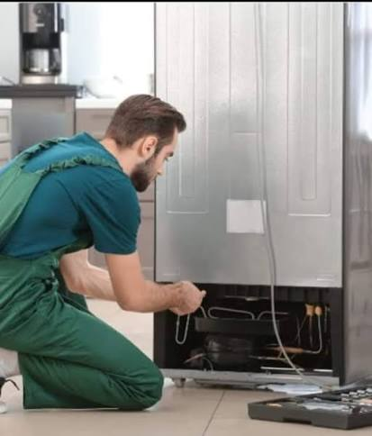
فحص التسريب بأحدث الأجهزة الإلكترونية وشحن الفريون الأصلي للثلاجة لضمان التبريد المثالي.
زيارة الخدمةاستبدال ضواغط الثلاجات بمواتير أصلية بالضمان مع ضبط دورة التبريد بالكامل.
زيارة الخدمة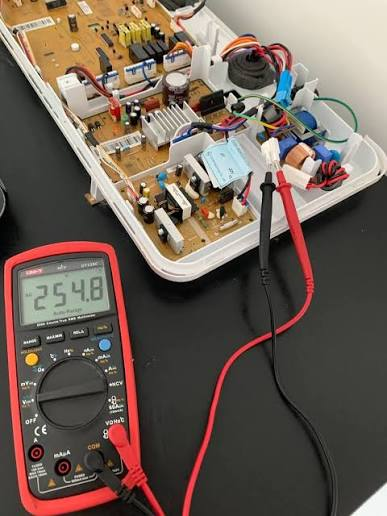
صيانة وإعادة برمجة كروت الديجيتال واللوحات البرمجية لجميع الثلاجات الحديثة والانفرتر.
زيارة الخدمة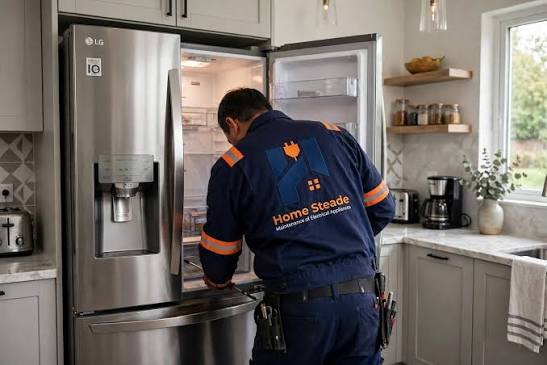
حل مشكلة تراكم الثلج أو ضعف التبريد في الكابينة وتغيير السخانات ومؤقت الذوبان (التيمر).
زيارة الخدمة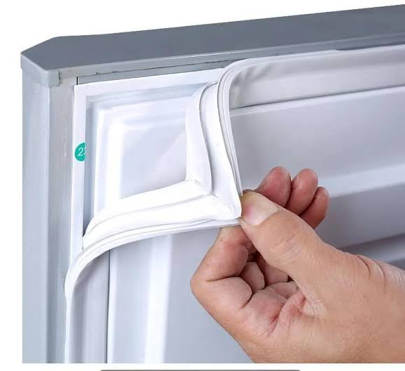
تغيير إطار الأبواب لمنع تسريب البرودة وضمان إغلاق الباب بإحكام وتوفير الكهرباء.
زيارة الخدمة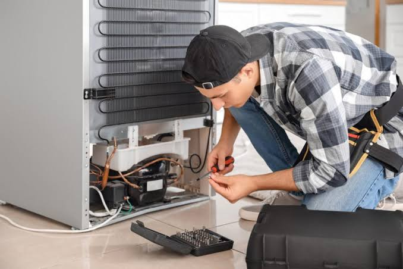
فحص دوري متكامل للثلاجة واكتشاف الأعطال قبل تفاقمها للحفاظ على عمر الجهاز.
زيارة الخدمةتُعد كريازي عملاق الصناعة المنزلية في مصر، وتتميز أجهزتها بالقوة والتحمل الشاق، المنتجات الأكثر مبيعاً تشمل: الثلاجات النوفروست، الديب فريزر الرأسي والأفقي الأكثر طلباً في السوق، وغسالات الملابس. الخط الساخن الموحد: 19580.
تُعد شركة كريازي Kiriazi من أقدم وأشهر الشركات المتخصصة في تصنيع الأجهزة المنزلية داخل السوق المصري، حيث استطاعت على مدار سنوات طويلة أن تحظى بثقة ملايين المستخدمين بفضل جودة منتجاتها واعتماد الكثير من الأسر عليها في الاستخدام اليومي.
وتتميز أجهزة كريازي Kiriazi بتنوعها الكبير مثل الثلاجات النوفروست والديفروست، والديب فريزر الرأسي والأفقي، بالإضافة إلى الغسالات الاتوماتيك والغسالات فوق الاتوماتيك والغسالات نصف الاتوماتيك، وكذلك البوتاجازات بمختلف أنواعها مثل بوتاجاز 5 شعله وبوتاجاز 4 شعله، إلى جانب سخانات الغاز والسخانات الكهربائية. ولذلك فإن الحفاظ على كفاءة هذه الأجهزة يتطلب الاعتماد على مركز متخصص في صيانة كريازي Kiriazi Maintenance يمتلك الخبرة الفنية الكافية للتعامل مع مختلف الأعطال.
وفي البداية، يجب التأكيد على أن الصيانة الدورية للأجهزة المنزلية تلعب دوراً أساسياً في الحفاظ على عمر الجهاز الافتراضي وتقليل احتمالية حدوث الأعطال المفاجئة. فالكثير من الأعطال تبدأ بمسألة بسيطة يمكن التعامل معها بسهولة إذا تم اكتشافها مبكراً من خلال صيانة كريازي Kiriazi.
ولذلك إذا لاحظت أي خلل في أحد الأجهزة داخل منزلك فمن الأفضل التحرك بسرعة قبل أن تتفاقم المشكلة. ويمكنك بسهولة التواصل مع رقم صيانة كريازي الخط الساخن 19580 حيث يقوم فريق خدمة العملاء بتسجيل طلب الصيانة وإرسال فني متخصص لفحص الجهاز في أسرع وقت ممكن.
وعلاوة على ذلك، توفر مراكز صيانة كريازي المعتمده Kiriazi Service فريقاً من الفنيين المدربين على أعلى مستوى للتعامل مع جميع الأعطال التي قد تصيب أجهزة كريازي المختلفة. حيث يتم استخدام أحدث أدوات الفحص والتشخيص لتحديد سبب المشكلة بدقة كبيرة، ومن ثم إصلاحها باستخدام قطع غيار أصلية متوافقة مع مواصفات أجهزة كريازي Kiriazi. وهذا ما يضمن عودة الجهاز للعمل بكفاءة عالية بعد الصيانة.
ومن ناحية أخرى، أصبح من السهل الآن طلب الدعم الفني بسرعة من خلال خدمة واتساب صيانة كريازي 01289966660 حيث يمكن للعملاء إرسال رسالة مباشرة لشرح المشكلة أو إرسال صورة لقطعة العطل للحصول على تشخيص مبدئي قبل إرسال الفني المختص، وتُعد هذه الطريقة من أسرع وسائل التواصل مع مركز صيانة كريازي للحصول على الدعم الفني الفوري.
وعلاوة على ذلك، يمكن للعملاء في مختلف المحافظات الحصول على الخدمة بسهولة من خلال تليفون صيانة كريازي حيث تعمل فرق الصيانة على تغطية مختلف المناطق لضمان وصول الدعم الفني بسرعة، كما يمكن التواصل عبر الخط الساخن 19580 لتسجيل طلب الصيانة أو الاستفسار عن الخدمات المتاحة.
وبذلك تمثل خدمات صيانة كريازي Kiriazi Maintenance الحل الأمثل للحفاظ على كفاءة الأجهزة المنزلية وضمان استمرارها في العمل بأفضل أداء ممكن، كما توفر وسائل تواصل متعددة مثل رقم صيانة كريازي الخط الساخن 19580 وتليفون صيانة كريازي وواتساب صيانة كريازي 01289966660 التي تساعد على طلب الخدمة بسرعة وأمان على مستوى الجمهورية.
تُعد إل جي (LG) من أبرز الرائدات في مجال الأجهزة المنزلية الذكية والتكنولوجيا المتطورة، وتتميز أجهزتها بالأداء القوي وتكنولوجيا الانفرتر الموفرة للطاقة. المنتجات الأكثر مبيعاً تشمل: الثلاجات الـ Side by Side والنوفروست، الغسالات الأتوماتيك مع خاصية البخار، وشاشات LG الذكية. الخط الساخن الموحد: 19580.
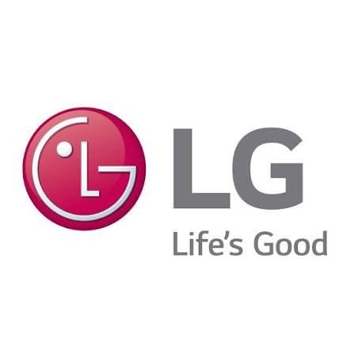
تُعد شركة إل جي LG من أكبر وأشهر الشركات العالمية المتخصصة في تصنيع الأجهزة المنزلية والحلول الذكية داخل السوق المصري، حيث استطاعت على مدار سنوات طويلة أن تحظى بثقة ملايين المستخدمين بفضل جودة منتجاتها وتكنولوجيتها المبتكرة.
وتتميز أجهزة إل جي LG بتنوعها الكبير مثل الثلاجات النوفروست وثلاجات الانفرتر الذكية، والديب فريزر، بالإضافة إلى غسالات الملابس الأتوماتيك والملابس ذات التحميل العلوي وغسالات الأطباق، فضلاً عن أجهزة التكييف والشاشات. ولذلك فإن الحفاظ على كفاءة هذه الأجهزة يتطلب الاعتماد على مركز متخصص في صيانة إل جي LG Maintenance يمتلك الخبرة الفنية الكافية للتعامل مع مختلف الأعطال والأنظمة البرمجية الحديثة.
وفي البداية، يجب التأكيد على أن الصيانة الدورية للأجهزة المنزلية تلعب دوراً أساسياً في الحفاظ على عمر الجهاز الافتراضي وتقليل احتمالية حدوث الأعطال المفاجئة. فالكثير من الأعطال تبدأ بمسألة بسيطة يمكن التعامل معها بسهولة إذا تم اكتشافها مبكراً من خلال صيانة إل جي LG.
ولذلك إذا لاحظت أي خلل في أحد الأجهزة داخل منزلك فمن الأفضل التحرك بسرعة قبل أن تتفاقم المشكلة. ويمكنك بسهولة التواصل مع رقم صيانة إل جي الخط الساخن 19580 حيث يقوم فريق خدمة العملاء بتسجيل طلب الصيانة وإرسال فني متخصص لفحص الجهاز في أسرع وقت ممكن.
وعلاوة على ذلك، توفر مراكز صيانة إل جي المعتمده LG Service فريقاً من الفنيين المدربين على أعلى مستوى للتعامل مع جميع الأعطال التي قد تصيب أجهزة إل جي المختلفة. حيث يتم استخدام أحدث أدوات الفحص والتشخيص لتحديد سبب المشكلة بدقة كبيرة، ومن ثم إصلاحها باستخدام قطع غيار أصلية متوافقة مع مواصفات أجهزة إل جي LG. وهذا ما يضمن عودة الجهاز للعمل بكفاءة عالية بعد الصيانة.
ومن ناحية أخرى، أصبح من السهل الآن طلب الدعم الفني بسرعة من خلال خدمة واتساب صيانة إل جي 01289966660 حيث يمكن للعملاء إرسال رسالة مباشرة لشرح المشكلة أو إرسال صورة لقطعة العطل للحصول على تشخيص مبدئي قبل إرسال الفني المختص، وتُعد هذه الطريقة من أسرع وسائل التواصل مع مركز صيانة إل جي للحصول على الدعم الفني الفوري.
وعلاوة على ذلك، يمكن للعملاء في مختلف المحافظات الحصول على الخدمة بسهولة من خلال تليفون صيانة إل جي حيث تعمل فرق الصيانة على تغطية مختلف المناطق لضمان وصول الدعم الفني بسرعة، كما يمكن التواصل عبر الخط الساخن 19580 لتسجيل طلب الصيانة أو الاستفسار عن الخدمات المتاحة.
وبذلك تمثل خدمات صيانة إل جي LG Maintenance الحل الأمثل للحفاظ على كفاءة الأجهزة المنزلية وضمان استمرارها في العمل بأفضل أداء ممكن، كما توفر وسائل تواصل متعددة مثل رقم صيانة إل جي الخط الساخن 19580 وتليفون صيانة إل جي وواتساب صيانة إل جي 01289966660 التي تساعد على طلب الخدمة بسرعة وأمان على مستوى الجمهورية.
تُعد سامسونج (Samsung) من الرائدات العالميات في ابتكار وتطوير الأجهزة المنزلية الذكية، وتتميز ثلاجاتها وأجهزتها بالاعتماد على تقنيات الانفرتر الموفرة للطاقة ونظام التبريد المزدوج Twin Cooling Plus. المنتجات الأكثر مبيعاً تشمل: الثلاجات الـ Side by Side والنوفروست، الغسالات الديجيتال، والشاشات الذكية. الخط الساخن الموحد: 19580.
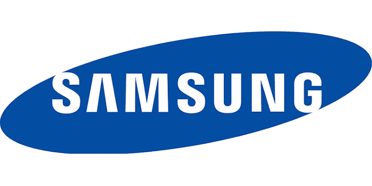
تُعد شركة سامسونج Samsung من أقدم وأشهر الشركات العالمية المتخصصة في تصنيع الأجهزة المنزلية والحلول التكنولوجية الذكية داخل السوق المصري، حيث استطاعت على مدار سنوات طويلة أن تحظى بثقة ملايين المستخدمين بفضل جودة منتجاتها واعتماد الكثير من الأسر عليها في الاستخدام اليومي.
وتتميز أجهزة سامسونج Samsung بتنوعها الكبير مثل الثلاجات النوفروست وثلاجات الانفرتر الذكية، والديب فريزر، بالإضافة إلى الغسالات الاتوماتيك وغسالات الفوق اتوماتيك ذات التكنولوجيا الحديثة، إلى جانب الشاشات وأجهزة التكييف. ولذلك فإن الحفاظ على كفاءة هذه الأجهزة يتطلب الاعتماد على مركز متخصص في صيانة سامسونج Samsung Maintenance يمتلك الخبرة الفنية الكافية للتعامل مع مختلف الأعطال واللوحات البرمجية الإلكترونية.
وفي البداية، يجب التأكيد على أن الصيانة الدورية للأجهزة المنزلية تلعب دوراً أساسياً في الحفاظ على عمر الجهاز الافتراضي وتقليل احتمالية حدوث الأعطال المفاجئة. فالكثير من الأعطال تبدأ بمسألة بسيطة يمكن التعامل معها بسهولة إذا تم اكتشافها مبكراً من خلال صيانة سامسونج Samsung.
ولذلك إذا لاحظت أي خلل في أحد الأجهزة داخل منزلك فمن الأفضل التحرك بسرعة قبل أن تتفاقم المشكلة. ويمكنك بسهولة التواصل مع رقم صيانة سامسونج الخط الساخن 19580 حيث يقوم فريق خدمة العملاء بتسجيل طلب الصيانة وإرسال فني متخصص لفحص الجهاز في أسرع وقت ممكن.
وعلاوة على ذلك، توفر مراكز صيانة سامسونج المعتمده Samsung Service فريقاً من الفنيين المدربين على أعلى مستوى للتعامل مع جميع الأعطال التي قد تصيب أجهزة سامسونج المختلفة. حيث يتم استخدام أحدث أدوات الفحص والتشخيص لتحديد سبب المشكلة بدقة كبيرة، ومن ثم إصلاحها باستخدام قطع غيار أصلية متوافقة مع مواصفات أجهزة سامسونج Samsung. وهذا ما يضمن عودة الجهاز للعمل بكفاءة عالية بعد الصيانة.
ومن ناحية أخرى، أصبح من السهل الآن طلب الدعم الفني بسرعة من خلال خدمة واتساب صيانة سامسونج 01289966660 حيث يمكن للعملاء إرسال رسالة مباشرة لشرح المشكلة أو إرسال صورة لقطعة العطل للحصول على تشخيص مبدئي قبل إرسال الفني المختص، وتُعد هذه الطريقة من أسرع وسائل التواصل مع مركز صيانة سامسونج للحصول على الدعم الفني الفوري.
وعلاوة على ذلك، يمكن للعملاء في مختلف المحافظات الحصول على الخدمة بسهولة من خلال تليفون صيانة سامسونج حيث تعمل فرق الصيانة على تغطية مختلف المناطق لضمان وصول الدعم الفني بسرعة، كما يمكن التواصل عبر الخط الساخن 19580 لتسجيل طلب الصيانة أو الاستفسار عن الخدمات المتاحة.
وبذلك تمثل خدمات صيانة سامسونج Samsung Maintenance الحل الأمثل للحفاظ على كفاءة الأجهزة المنزلية وضمان استمرارها في العمل بأفضل أداء ممكن، كما توفر وسائل تواصل متعددة مثل رقم صيانة سامسونج الخط الساخن 19580 وتليفون صيانة سامسونج وواتساب صيانة سامسونج 01289966660 التي تساعد على طلب الخدمة بسرعة وأمان على مستوى الجمهورية.
تُعد توشيبا (Toshiba) من الرائدات العالميات في ابتكار وتطوير الأجهزة المنزلية الذكية، وتتميز ثلاجاتها وأجهزتها بالاعتماد على تقنيات الانفرتر الموفرة للطاقة ونظام التبريد المتقدم. المنتجات الأكثر مبيعاً تشمل: الثلاجات الـ Side by Side والنوفروست، الغسالات الديجيتال، والشاشات الذكية. الخط الساخن الموحد: 19580.
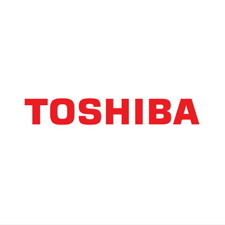
تُعد شركة توشيبا Toshiba من أقدم وأشهر الشركات العالمية المتخصصة في تصنيع الأجهزة المنزلية والحلول التكنولوجية الذكية داخل السوق المصري، حيث استطاعت على مدار سنوات طويلة أن تحظى بثقة ملايين المستخدمين بفضل جودة منتجاتها واعتماد الكثير من الأسر عليها في الاستخدام اليومي.
وتتميز أجهزة توشيبا Toshiba بتنوعها الكبير مثل الثلاجات النوفروست وثلاجات الانفرتر الذكية، والديب فريزر، بالإضافة إلى الغسالات الاتوماتيك وغسالات الفوق اتوماتيك ذات التكنولوجيا الحديثة، إلى جانب الشاشات وأجهزة التكييف. ولذلك فإن الحفاظ على كفاءة هذه الأجهزة يتطلب الاعتماد على مركز متخصص في صيانة توشيبا Toshiba Maintenance يمتلك الخبرة الفنية الكافية للتعامل مع مختلف الأعطال واللوحات البرمجية الإلكترونية.
وفي البداية، يجب التأكيد على أن الصيانة الدورية للأجهزة المنزلية تلعب دوراً أساسياً في الحفاظ على عمر الجهاز الافتراضي وتقليل احتمالية حدوث الأعطال المفاجئة. فالكثير من الأعطال تبدأ بمسألة بسيطة يمكن التعامل معها بسهولة إذا تم اكتشافها مبكراً من خلال صيانة توشيبا Toshiba.
ولذلك إذا لاحظت أي خلل في أحد الأجهزة داخل منزلك فمن الأفضل التحرك بسرعة قبل أن تتفاقم المشكلة. ويمكنك بسهولة التواصل مع رقم صيانة توشيبا الخط الساخن 19580 حيث يقوم فريق خدمة العملاء بتسجيل طلب الصيانة وإرسال فني متخصص لفحص الجهاز في أسرع وقت ممكن.
وعلاوة على ذلك، توفر مراكز صيانة توشيبا المعتمده Toshiba Service فريقاً من الفنيين المدربين على أعلى مستوى للتعامل مع جميع الأعطال التي قد تصيب أجهزة توشيبا المختلفة. حيث يتم استخدام أحدث أدوات الفحص والتشخيص لتحديد سبب المشكلة بدقة كبيرة، ومن ثم إصلاحها باستخدام قطع غيار أصلية متوافقة مع مواصفات أجهزة توشيبا Toshiba. وهذا ما يضمن عودة الجهاز للعمل بكفاءة عالية بعد الصيانة.
ومن ناحية أخرى، أصبح من السهل الآن طلب الدعم الفني بسرعة من خلال خدمة واتساب صيانة توشيبا 01289966660 حيث يمكن للعملاء إرسال رسالة مباشرة لشرح المشكلة أو إرسال صورة لقطعة العطل للحصول على تشخيص مبدئي قبل إرسال الفني المختص، وتُعد هذه الطريقة من أسرع وسائل التواصل مع مركز صيانة توشيبا للحصول على الدعم الفني الفوري.
وعلاوة على ذلك، يمكن للعملاء في مختلف المحافظات الحصول على الخدمة بسهولة من خلال تليفون صيانة توشيبا حيث تعمل فرق الصيانة على تغطية مختلف المناطق لضمان وصول الدعم الفني بسرعة، كما يمكن التواصل عبر الخط الساخن 19580 لتسجيل طلب الصيانة أو الاستفسار عن الخدمات المتاحة.
وبذلك تمثل خدمات صيانة توشيبا Toshiba Maintenance الحل الأمثل للحفاظ على كفاءة الأجهزة المنزلية وضمان استمرارها في العمل بأفضل أداء ممكن، كما توفر وسائل تواصل متعددة مثل رقم صيانة توشيبا الخط الساخن 19580 وتليفون صيانة توشيبا وواتساب صيانة توشيبا 01289966660 التي تساعد على طلب الخدمة بسرعة وأمان على مستوى الجمهورية.
تُعد إيديال زانوسي (Ideal Zanussi) من العلامات الرائدة والعريقة في ابتكار وتطوير الأجهزة المنزلية، وتتميز غسالاتها وأجهزتها بالاعتماد على التكنولوجيا المتطورة ومتانة التصنيع. المنتجات الأكثر مبيعاً تشمل: الغسالات الديجيتال، الثلاجات النوفروست، السخانات، والديب فريزر. الخط الساخن الموحد: 19580.
تُعد شركة إيديال زانوسي Ideal Zanussi من أقدم وأشهر الشركات المتخصصة في تصنيع الأجهزة المنزلية داخل السوق المصري، حيث استطاعت على مدار عقود طويلة أن تحظى بثقة ملايين المستخدمين بفضل جودة منتجاتها واعتماد الكثير من الأسر عليها في الاستخدام اليومي.
وتتميز أجهزة إيديال زانوسي Ideal Zanussi بتنوعها الكبير مثل الغسالات الاتوماتيك وغسالات الفوق اتوماتيك، والثلاجات النوفروست، والديب فريزر، بالإضافة إلى السخانات وأجهزة المطبخ الحديثة. ولذلك فإن الحفاظ على كفاءة هذه الأجهزة يتطلب الاعتماد على مركز متخصص في صيانة إيديال زانوسي Ideal Zanussi Maintenance يمتلك الخبرة الفنية الكافية للتعامل مع مختلف الأعطال واللوحات البرمجية الإلكترونية.
وفي البداية، يجب التأكيد على أن الصيانة الدورية للأجهزة المنزلية تلعب دوراً أساسياً في الحفاظ على عمر الجهاز الافتراضي وتقليل احتمالية حدوث الأعطال المفاجئة. فالكثير من الأعطال تبدأ بمسألة بسيطة يمكن التعامل معها بسهولة إذا تم اكتشافها مبكراً من خلال صيانة إيديال زانوسي Ideal Zanussi.
ولذلك إذا لاحظت أي خلل في أحد الأجهزة داخل منزلك فمن الأفضل التحرك بسرعة قبل أن تتفاقم المشكلة. ويمكنك بسهولة التواصل مع رقم صيانة إيديال زانوسي الخط الساخن 19580 حيث يقوم فريق خدمة العملاء بتسجيل طلب الصيانة وإرسال فني متخصص لفحص الجهاز في أسرع وقت ممكن.
وعلاوة على ذلك، توفر مراكز صيانة إيديال زانوسي المعتمدة Ideal Zanussi Service فريقاً من الفنيين المدربين على أعلى مستوى للتعامل مع جميع الأعطال التي قد تصيب أجهزة زانوسي المختلفة. حيث يتم استخدام أحدث أدوات الفحص والتشخيص لتحديد سبب المشكلة بدقة كبيرة، ومن ثم إصلاحها باستخدام قطع غيار أصلية متوافقة مع مواصفات أجهزة إيديال زانوسي Ideal Zanussi. وهذا ما يضمن عودة الجهاز للعمل بكفاءة عالية بعد الصيانة.
ومن ناحية أخرى، أصبح من السهل الآن طلب الدعم الفني بسرعة من خلال خدمة واتساب صيانة إيديال زانوسي 01289966660 حيث يمكن للعملاء إرسال رسالة مباشرة لشرح المشكلة أو إرسال صورة لقطعة العطل للحصول على تشخيص مبدئي قبل إرسال الفني المختص، وتُعد هذه الطريقة من أسرع وسائل التواصل مع مركز صيانة إيديال زانوسي للحصول على الدعم الفني الفوري.
وعلاوة على ذلك، يمكن للعملاء في مختلف المحافظات الحصول على الخدمة بسهولة من خلال تليفون صيانة إيديال زانوسي حيث تعمل فرق الصيانة على تغطية مختلف المناطق لضمان وصول الدعم الفني بسرعة، كما يمكن التواصل عبر الخط الساخن 19580 لتسجيل طلب الصيانة أو الاستفسار عن الخدمات المتاحة.
وبذلك تمثل خدمات صيانة إيديال زانوسي Ideal Zanussi Maintenance الحل الأمثل للحفاظ على كفاءة الأجهزة المنزلية وضمان استمرارها في العمل بأفضل أداء ممكن، كما توفر وسائل تواصل متعددة مثل رقم صيانة إيديال زانوسي الخط الساخن 19580 وتليفون صيانة زانوسي وواتساب صيانة زانوسي 01289966660 التي تساعد على طلب الخدمة بسرعة وأمان على مستوى الجمهورية.
تُعد بيكو (Beko) من أسرع العلامات التجارية نمواً وابتكاراً في قطاع الأجهزة المنزلية الذكية عالمياً، وتتميز أجهزتها بالاعتماد على تقنيات توفير الطاقة والتصميمات الأوروبية المتقدمة. المنتجات الأكثر مبيعاً تشمل: الثلاجات النوفروست والـ Side by Side، الغسالات الديجيتال، غسالات الأطباق، والمجففات. الخط الساخن الموحد: 19580.
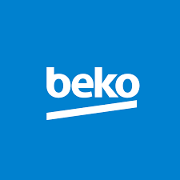
تُعد شركة بيكو Beko من أبرز العلامات التجارية العالمية الرائدة في تصنيع الأجهزة المنزلية والحلول التكنولوجية الذكية داخل السوق المصري، حيث استطاعت أن تحظى بثقة ملايين المستخدمين في فترة قصيرة بفضل جودة منتجاتها واعتماد العائلات عليها في مهامهم اليومية.
وتتميز أجهزة بيكو Beko بتنوعها الكبير مثل الثلاجات النوفروست، الديب فريزر، الغسالات الاتوماتيك وغسالات الأطباق ذات التكنولوجيا الحديثة، بالإضافة إلى المجففات وأجهزة المطبخ المدمجة. ولذلك فإن الحفاظ على كفاءة هذه الأجهزة يتطلب الاعتماد على مركز متخصص في صيانة بيكو Beko Maintenance يمتلك الخبرة الفنية الكافية للتعامل مع مختلف الأعطال واللوحات البرمجية الإلكترونية.
وفي البداية، يجب التأكيد على أن الصيانة الدورية للأجهزة المنزلية تلعب دوراً أساسياً في الحفاظ على عمر الجهاز الافتراضي وتقليل احتمالية حدوث الأعطال المفاجئة. فالكثير من الأعطال تبدأ بمسألة بسيطة يمكن التعامل معها بسهولة إذا تم اكتشافها مبكراً من خلال صيانة بيكو Beko.
ولذلك إذا لاحظت أي خلل في أحد الأجهزة داخل منزلك فمن الأفضل التحرك بسرعة قبل أن تتفاقم المشكلة. ويمكنك بسهولة التواصل مع رقم صيانة بيكو الخط الساخن 19580 حيث يقوم فريق خدمة العملاء بتسجيل طلب الصيانة وإرسال فني متخصص لفحص الجهاز في أسرع وقت ممكن.
وعلاوة على ذلك، توفر مراكز صيانة بيكو المعتمدة Beko Service فريقاً من الفنيين المدربين على أعلى مستوى للتعامل مع جميع الأعطال التي قد تصيب أجهزة بيكو المختلفة. حيث يتم استخدام أحدث أدوات الفحص والتشخيص لتحديد سبب المشكلة بدقة كبيرة، ومن ثم إصلاحها باستخدام قطع غيار أصلية متوافقة مع مواصفات أجهزة بيكو Beko. وهذا ما يضمن عودة الجهاز للعمل بكفاءة عالية بعد الصيانة.
ومن ناحية أخرى، أصبح من السهل الآن طلب الدعم الفني بسرعة من خلال خدمة واتساب صيانة بيكو 01289966660 حيث يمكن للعملاء إرسال رسالة مباشرة لشرح المشكلة أو إرسال صورة لقطعة العطل للحصول على تشخيص مبدئي قبل إرسال الفني المختص، وتُعد هذه الطريقة من أسرع وسائل التواصل مع مركز صيانة بيكو للحصول على الدعم الفني الفوري.
وعلاوة على ذلك، يمكن للعملاء في مختلف المحافظات الحصول على الخدمة بسهولة من خلال تليفون صيانة بيكو حيث تعمل فرق الصيانة على تغطية مختلف المناطق لضمان وصول الدعم الفني بسرعة، كما يمكن التواصل عبر الخط الساخن 19580 لتسجيل طلب الصيانة أو الاستفسار عن الخدمات المتاحة.
وبذلك تمثل خدمات صيانة بيكو Beko Maintenance الحل الأمثل للحفاظ على كفاءة الأجهزة المنزلية وضمان استمرارها في العمل بأفضل أداء ممكن، كما توفر وسائل تواصل متعددة مثل رقم صيانة بيكو الخط الساخن 19580 وتليفون صيانة بيكو وواتساب صيانة بيكو 01289966660 التي تساعد على طلب الخدمة بسرعة وأمان على مستوى الجمهورية.
تُعد وايت ويل (White Whale) من العلامات التجارية البارزة والموثوقة في تقديم أحدث حلول الأجهزة المنزلية الذكية، وتتميز منتجاتها بالاعتماد على التكنولوجيا المتقدمة والتصميمات العصرية التي تلبي احتياجات الأسرة. المنتجات الأكثر مبيعاً تشمل: الثلاجات النوفروست، الغسالات الديجيتال، غسالات الأطباق، والديب فريزر. الخط الساخن الموحد: 19580.
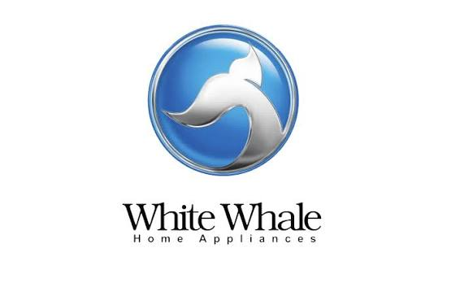
تُعد شركة وايت ويل White Whale من الشركات الرائدة والشهيرة في تصنيع الأجهزة المنزلية والحلول التكنولوجية الذكية داخل السوق المصري، حيث نجحت على مدار السنوات في نيل ثقة قطاع عريض من المستخدمين بفضل جودة أجهزتها واعتماد الكثير من العائلات عليها يومياً.
وتتميز أجهزة وايت ويل White Whale بتنوعها الشامل مثل الثلاجات النوفروست، الديب فريزر الرأسي والأفقي، الغسالات الاتوماتيك وغسالات الأطباق، بالإضافة إلى أجهزة المطبخ المختلفة. ولذلك فإن الحفاظ على كفاءة هذه الأجهزة يتطلب الاعتماد على مركز متخصص في صيانة وايت ويل White Whale Maintenance يمتلك الخبرة الفنية اللازمة للتعامل مع مختلف الأعطال واللوحات البرمجية الإلكترونية.
وفي البداية، يجب التأكيد على أن الصيانة الدورية للأجهزة المنزلية تلعب دوراً أساسياً في الحفاظ على عمر الجهاز الافتراضي وتقليل احتمالية حدوث الأعطال المفاجئة. فالكثير من الأعطال تبدأ بمشكلة بسيطة يمكن تداركها بسهولة إذا تم اكتشافها مبكراً من خلال صيانة وايت ويل White Whale.
ولذلك إذا لاحظت أي خلل في أحد الأجهزة بمنزلك فمن الأفضل المبادرة بالتواصل مع رقم صيانة وايت ويل الخط الساخن 19580 حيث يقوم فريق خدمة العملاء بتسجيل طلب الصيانة وتوجيه فني متخصص لفحص الجهاز في أسرع وقت ممكن.
وعلاوة على ذلك، توفر مراكز صيانة وايت ويل المعتمدة White Whale Service فريقاً من الفنيين المدربين على أعلى مستوى للتعامل مع جميع الأعطال التي قد تصيب أجهزة وايت ويل المختلفة. حيث يتم استخدام أحدث أجهزة الفحص والتشخيص لتحديد سبب المشكلة بدقة متناهية، ومن ثم إصلاحها باستخدام قطع غيار أصلية متوافقة تماماً مع مواصفات أجهزة وايت ويل White Whale. وهذا ما يضمن عودة الجهاز للعمل بأعلى كفاءة بعد الصيانة.
ومن ناحية أخرى، أصبح من السهل الآن طلب الدعم الفني بسرعة من خلال خدمة واتساب صيانة وايت ويل 01289966660 حيث يمكن للعملاء إرسال رسالة مباشرة لشرح المشكلة أو إرسال صورة لقطعة العطل للحصول على تشخيص مبدئي قبل وصول الفني المختص، وتُعد هذه الطريقة من أسرع وسائل التواصل مع مركز صيانة وايت ويل للحصول على الدعم الفني الفوري.
وعلاوة على ذلك، يمكن للعملاء في مختلف المحافظات الحصول على الخدمة بكل سهولة من خلال تليفون صيانة وايت ويل حيث تعمل فرق الصيانة على تغطية مختلف المناطق لضمان سرعة وصول الدعم الفني، كما يمكن التواصل عبر الخط الساخن 19580 لتسجيل طلبات الصيانة أو الاستفسار عن الخدمات المتاحة.
وبذلك تمثل خدمات صيانة وايت ويل White Whale Maintenance الحل الأمثل للحفاظ على كفاءة أجهزتك المنزلية وضمان استمرار عملها بأفضل أداء ممكن، كما توفر وسائل تواصل متعددة مثل رقم صيانة وايت ويل الخط الساخن 19580 وتليفون صيانة وايت ويل وواتساب صيانة وايت ويل 01289966660 التي تساعد على طلب الخدمة بسرعة وأمان على مستوى الجمهورية.
تُعد إلكتروستار (Electrostar) من العلامات التجارية البارزة والموثوقة في تقديم أحدث حلول الأجهزة المنزلية الذكية، وتتميز منتجاتها بالاعتماد على التكنولوجيا المتقدمة والتصميمات العصرية التي تلبي احتياجات الأسرة. المنتجات الأكثر مبيعاً تشمل: الثلاجات النوفروست، الغسالات الديجيتال، غسالات الأطباق، والديب فريزر. الخط الساخن الموحد: 19580.
تُعد شركة إلكتروستار Electrostar من الشركات الرائدة والشهيرة في تصنيع الأجهزة المنزلية والحلول التكنولوجية الذكية داخل السوق المصري، حيث نجحت على مدار السنوات في نيل ثقة قطاع عريض من المستخدمين بفضل جودة أجهزتها واعتماد الكثير من العائلات عليها يومياً.
وتتميز أجهزة إلكتروستار Electrostar بتنوعها الشامل مثل الثلاجات النوفروست، الديب فريزر الرأسي والأفقي، الغسالات الاتوماتيك وغسالات الأطباق، بالإضافة إلى أجهزة المطبخ المختلفة. ولذلك فإن الحفاظ على كفاءة هذه الأجهزة يتطلب الاعتماد على مركز متخصص في صيانة إلكتروستار Electrostar Maintenance يمتلك الخبرة الفنية اللازمة للتعامل مع مختلف الأعطال واللوحات البرمجية الإلكترونية.
وفي البداية، يجب التأكيد على أن الصيانة الدورية للأجهزة المنزلية تلعب دوراً أساسياً في الحفاظ على عمر الجهاز الافتراضي وتقليل احتمالية حدوث الأعطال المفاجئة. فالكثير من الأعطال تبدأ بمشكلة بسيطة يمكن تداركها بسهولة إذا تم اكتشافها مبكراً من خلال صيانة إلكتروستار Electrostar.
ولذلك إذا لاحظت أي خلل في أحد الأجهزة بمنزلك فمن الأفضل المبادرة بالتواصل مع رقم صيانة إلكتروستار الخط الساخن 19580 حيث يقوم فريق خدمة العملاء بتسجيل طلب الصيانة وتوجيه فني متخصص لفحص الجهاز في أسرع وقت ممكن.
وعلاوة على ذلك، توفر مراكز صيانة إلكتروستار المعتمدة Electrostar Service فريقاً من الفنيين المدربين على أعلى مستوى للتعامل مع جميع الأعطال التي قد تصيب أجهزة إلكتروستار المختلفة. حيث يتم استخدام أحدث أجهزة الفحص والتشخيص لتحديد سبب المشكلة بدقة متناهية، ومن ثم إصلاحها باستخدام قطع غيار أصلية متوافقة تماماً مع مواصفات أجهزة إلكتروستار Electrostar. وهذا ما يضمن عودة الجهاز للعمل بأعلى كفاءة بعد الصيانة.
ومن ناحية أخرى، أصبح من السهل الآن طلب الدعم الفني بسرعة من خلال خدمة واتساب صيانة إلكتروستار 01289966660 حيث يمكن للعملاء إرسال رسالة مباشرة لشرح المشكلة أو إرسال صورة لقطعة العطل للحصول على تشخيص مبدئي قبل وصول الفني المختص، وتُعد هذه الطريقة من أسرع وسائل التواصل مع مركز صيانة إلكتروستار للحصول على الدعم الفني الفوري.
وعلاوة على ذلك، يمكن للعملاء في مختلف المحافظات الحصول على الخدمة بكل سهولة من خلال تليفون صيانة إلكتروستار حيث تعمل فرق الصيانة على تغطية مختلف المناطق لضمان سرعة وصول الدعم الفني، كما يمكن التواصل عبر الخط الساخن 19580 لتسجيل طلبات الصيانة أو الاستفسار عن الخدمات المتاحة.
وبذلك تمثل خدمات صيانة إلكتروستار Electrostar Maintenance الحل الأمثل للحفاظ على كفاءة أجهزتك المنزلية وضمان استمرار عملها بأفضل أداء ممكن، كما توفر وسائل تواصل متعددة مثل رقم صيانة إلكتروستار الخط الساخن 19580 وتليفون صيانة إلكتروستار وواتساب صيانة إلكتروستار 01289966660 التي تساعد على طلب الخدمة بسرعة وأمان على مستوى الجمهورية.
تُعد وايت بوينت (White Point) من العلامات التجارية البارزة والموثوقة في تقديم أحدث حلول الأجهزة المنزلية الذكية، وتتميز منتجاتها بالاعتماد على التكنولوجيا المتقدمة والتصميمات العصرية التي تلبي احتياجات الأسرة. المنتجات الأكثر مبيعاً تشمل: الثلاجات النوفروست، الغسالات الديجيتال، غسالات الأطباق، والديب فريزر. الخط الساخن الموحد: 19580.
تُعد شركة وايت بوينت White Point من الشركات الرائدة والشهيرة في تصنيع الأجهزة المنزلية والحلول التكنولوجية الذكية داخل السوق المصري، حيث نجحت على مدار السنوات في نيل ثقة قطاع عريض من المستخدمين بفضل جودة أجهزتها واعتماد الكثير من العائلات عليها يومياً.
وتتميز أجهزة وايت بوينت White Point بتنوعها الشامل مثل الثلاجات النوفروست، الديب فريزر الرأسي والأفقي، الغسالات الاتوماتيك وغسالات الأطباق، بالإضافة إلى أجهزة المطبخ المختلفة. ولذلك فإن الحفاظ على كفاءة هذه الأجهزة يتطلب الاعتماد على مركز متخصص في صيانة وايت بوينت White Point Maintenance يمتلك الخبرة الفنية اللازمة للتعامل مع مختلف الأعطال واللوحات البرمجية الإلكترونية.
وفي البداية، يجب التأكيد على أن الصيانة الدورية للأجهزة المنزلية تلعب دوراً أساسياً في الحفاظ على عمر الجهاز الافتراضي وتقليل احتمالية حدوث الأعطال المفاجئة. فالكثير من الأعطال تبدأ بمشكلة بسيطة يمكن تداركها بسهولة إذا تم اكتشافها مبكراً من خلال صيانة وايت بوينت White Point.
ولذلك إذا لاحظت أي خلل في أحد الأجهزة بمنزلك فمن الأفضل المبادرة بالتواصل مع رقم صيانة وايت بوينت الخط الساخن 19580 حيث يقوم فريق خدمة العملاء بتسجيل طلب الصيانة وتوجيه فني متخصص لفحص الجهاز في أسرع وقت ممكن.
وعلاوة على ذلك، توفر مراكز صيانة وايت بوينت المعتمدة White Point Service فريقاً من الفنيين المدربين على أعلى مستوى للتعامل مع جميع الأعطال التي قد تصيب أجهزة وايت بوينت المختلفة. حيث يتم استخدام أحدث أجهزة الفحص والتشخيص لتحديد سبب المشكلة بدقة متناهية، ومن ثم إصلاحها باستخدام قطع غيار أصلية متوافقة تماماً مع مواصفات أجهزة وايت بوينت White Point. وهذا ما يضمن عودة الجهاز للعمل بأعلى كفاءة بعد الصيانة.
ومن ناحية أخرى، أصبح من السهل الآن طلب الدعم الفني بسرعة من خلال خدمة واتساب صيانة وايت بوينت 01289966660 حيث يمكن للعملاء إرسال رسالة مباشرة لشرح المشكلة أو إرسال صورة لقطعة العطل للحصول على تشخيص مبدئي قبل وصول الفني المختص، وتُعد هذه الطريقة من أسرع وسائل التواصل مع مركز صيانة وايت بوينت للحصول على الدعم الفني الفوري.
وعلاوة على ذلك، يمكن للعملاء في مختلف المحافظات الحصول على الخدمة بكل سهولة من خلال تليفون صيانة وايت بوينت حيث تعمل فرق الصيانة على تغطية مختلف المناطق لضمان سرعة وصول الدعم الفني، كما يمكن التواصل عبر الخط الساخن 19580 لتسجيل طلبات الصيانة أو الاستفسار عن الخدمات المتاحة.
وبذلك تمثل خدمات صيانة وايت بوينت White Point Maintenance الحل الأمثل للحفاظ على كفاءة أجهزتك المنزلية وضمان استمرار عملها بأفضل أداء ممكن، كما توفر وسائل تواصل متعددة مثل رقم صيانة وايت بوينت الخط الساخن 19580 وتليفون صيانة وايت بوينت وواتساب صيانة وايت بوينت 01289966660 التي تساعد على طلب الخدمة بسرعة وأمان على مستوى الجمهورية.
تُعد ألاسكا (Alaska) من العلامات التجارية البارزة والموثوقة في تقديم أحدث حلول الأجهزة المنزلية الذكية، وتتميز منتجاتها بالاعتماد على التكنولوجيا المتقدمة والتصميمات العصرية التي تلبي احتياجات الأسرة. المنتجات الأكثر مبيعاً تشمل: الثلاجات النوفروست، الغسالات الديجيتال، غسالات الأطباق، والديب فريزر. الخط الساخن الموحد: 19580.
تُعد شركة ألاسكا Alaska من الشركات الرائدة والشهيرة في تصنيع الأجهزة المنزلية والحلول التكنولوجية الذكية داخل السوق المصري، حيث نجحت على مدار السنوات في نيل ثقة قطاع عريض من المستخدمين بفضل جودة أجهزتها واعتماد الكثير من العائلات عليها يومياً.
وتتميز أجهزة ألاسكا Alaska بتنوعها الشامل مثل الثلاجات النوفروست، الديب فريزر الرأسي والأفقي، الغسالات الاتوماتيك وغسالات الأطباق، بالإضافة إلى أجهزة المطبخ المختلفة. ولذلك فإن الحفاظ على كفاءة هذه الأجهزة يتطلب الاعتماد على مركز متخصص في صيانة ألاسكا Alaska Maintenance يمتلك الخبرة الفنية اللازمة للتعامل مع مختلف الأعطال واللوحات البرمجية الإلكترونية.
وفي البداية، يجب التأكيد على أن الصيانة الدورية للأجهزة المنزلية تلعب دوراً أساسياً في الحفاظ على عمر الجهاز الافتراضي وتقليل احتمالية حدوث الأعطال المفاجئة. فالكثير من الأعطال تبدأ بمشكلة بسيطة يمكن تداركها بسهولة إذا تم اكتشافها مبكراً من خلال صيانة ألاسكا Alaska.
ولذلك إذا لاحظت أي خلل في أحد الأجهزة بمنزلك فمن الأفضل المبادرة بالتواصل مع رقم صيانة ألاسكا الخط الساخن 19580 حيث يقوم فريق خدمة العملاء بتسجيل طلب الصيانة وتوجيه فني متخصص لفحص الجهاز في أسرع وقت ممكن.
وعلاوة على ذلك، توفر مراكز صيانة ألاسكا المعتمدة Alaska Service فريقاً من الفنيين المدربين على أعلى مستوى للتعامل مع جميع الأعطال التي قد تصيب أجهزة ألاسكا المختلفة. حيث يتم استخدام أحدث أجهزة الفحص والتشخيص لتحديد سبب المشكلة بدقة متناهية، ومن ثم إصلاحها باستخدام قطع غيار أصلية متوافقة تماماً مع مواصفات أجهزة ألاسكا Alaska. وهذا ما يضمن عودة الجهاز للعمل بأعلى كفاءة بعد الصيانة.
ومن ناحية أخرى، أصبح من السهل الآن طلب الدعم الفني بسرعة من خلال خدمة واتساب صيانة ألاسكا 01289966660 حيث يمكن للعملاء إرسال رسالة مباشرة لشرح المشكلة أو إرسال صورة لقطعة العطل للحصول على تشخيص مبدئي قبل وصول الفني المختص، وتُعد هذه الطريقة من أسرع وسائل التواصل مع مركز صيانة ألاسكا للحصول على الدعم الفني الفوري.
وعلاوة على ذلك، يمكن للعملاء في مختلف المحافظات الحصول على الخدمة بكل سهولة من خلال تليفون صيانة ألاسكا حيث تعمل فرق الصيانة على تغطية مختلف المناطق لضمان سرعة وصول الدعم الفني، كما يمكن التواصل عبر الخط الساخن 19580 لتسجيل طلبات الصيانة أو الاستفسار عن الخدمات المتاحة.
وبذلك تمثل خدمات صيانة ألاسكا Alaska Maintenance الحل الأمثل للحفاظ على كفاءة أجهزتك المنزلية وضمان استمرار عملها بأفضل أداء ممكن، كما توفر وسائل تواصل متعددة مثل رقم صيانة ألاسكا الخط الساخن 19580 وتليفون صيانة ألاسكا وواتساب صيانة ألاسكا 01289966660 التي تساعد على طلب الخدمة بسرعة وأمان على مستوى الجمهورية.
تُعد ألاسكا (Alaska) من العلامات التجارية البارزة والموثوقة في تقديم أحدث حلول الأجهزة المنزلية الذكية، وتتميز منتجاتها بالاعتماد على التكنولوجيا المتقدمة والتصميمات العصرية التي تلبي احتياجات الأسرة. المنتجات الأكثر مبيعاً تشمل: الثلاجات النوفروست، الغسالات الديجيتال، غسالات الأطباق، والديب فريزر. الخط الساخن الموحد: 19580.
تُعد شركة ألاسكا Alaska من الشركات الرائدة والشهيرة في تصنيع الأجهزة المنزلية والحلول التكنولوجية الذكية داخل السوق المصري، حيث نجحت على مدار السنوات في نيل ثقة قطاع عريض من المستخدمين بفضل جودة أجهزتها واعتماد الكثير من العائلات عليها يومياً.
وتتميز أجهزة ألاسكا Alaska بتنوعها الشامل مثل الثلاجات النوفروست، الديب فريزر الرأسي والأفقي، الغسالات الاتوماتيك وغسالات الأطباق، بالإضافة إلى أجهزة المطبخ المختلفة. ولذلك فإن الحفاظ على كفاءة هذه الأجهزة يتطلب الاعتماد على مركز متخصص في صيانة ألاسكا Alaska Maintenance يمتلك الخبرة الفنية اللازمة للتعامل مع مختلف الأعطال واللوحات البرمجية الإلكترونية.
وفي البداية، يجب التأكيد على أن الصيانة الدورية للأجهزة المنزلية تلعب دوراً أساسياً في الحفاظ على عمر الجهاز الافتراضي وتقليل احتمالية حدوث الأعطال المفاجئة. فالكثير من الأعطال تبدأ بمشكلة بسيطة يمكن تداركها بسهولة إذا تم اكتشافها مبكراً من خلال صيانة ألاسكا Alaska.
ولذلك إذا لاحظت أي خلل في أحد الأجهزة بمنزلك فمن الأفضل المبادرة بالتواصل مع رقم صيانة ألاسكا الخط الساخن 19580 حيث يقوم فريق خدمة العملاء بتسجيل طلب الصيانة وتوجيه فني متخصص لفحص الجهاز في أسرع وقت ممكن.
وعلاوة على ذلك، توفر مراكز صيانة ألاسكا المعتمدة Alaska Service فريقاً من الفنيين المدربين على أعلى مستوى للتعامل مع جميع الأعطال التي قد تصيب أجهزة ألاسكا المختلفة. حيث يتم استخدام أحدث أجهزة الفحص والتشخيص لتحديد سبب المشكلة بدقة متناهية، ومن ثم إصلاحها باستخدام قطع غيار أصلية متوافقة تماماً مع مواصفات أجهزة ألاسكا Alaska. وهذا ما يضمن عودة الجهاز للعمل بأعلى كفاءة بعد الصيانة.
ومن ناحية أخرى، أصبح من السهل الآن طلب الدعم الفني بسرعة من خلال خدمة واتساب صيانة ألاسكا 01289966660 حيث يمكن للعملاء إرسال رسالة مباشرة لشرح المشكلة أو إرسال صورة لقطعة العطل للحصول على تشخيص مبدئي قبل وصول الفني المختص، وتُعد هذه الطريقة من أسرع وسائل التواصل مع مركز صيانة ألاسكا للحصول على الدعم الفني الفوري.
وعلاوة على ذلك، يمكن للعملاء في مختلف المحافظات الحصول على الخدمة بكل سهولة من خلال تليفون صيانة ألاسكا حيث تعمل فرق الصيانة على تغطية مختلف المناطق لضمان سرعة وصول الدعم الفني، كما يمكن التواصل عبر الخط الساخن 19580 لتسجيل طلبات الصيانة أو الاستفسار عن الخدمات المتاحة.
وبذلك تمثل خدمات صيانة ألاسكا Alaska Maintenance الحل الأمثل للحفاظ على كفاءة أجهزتك المنزلية وضمان استمرار عملها بأفضل أداء ممكن، كما توفر وسائل تواصل متعددة مثل رقم صيانة ألاسكا الخط الساخن 19580 وتليفون صيانة ألاسكا وواتساب صيانة ألاسكا 01289966660 التي تساعد على طلب الخدمة بسرعة وأمان على مستوى الجمهورية.
تُعد فريش (Fresh) من العلامات التجارية البارزة والموثوقة في تقديم أحدث حلول الأجهزة المنزلية الذكية، وتتميز منتجاتها بالاعتماد على التكنولوجيا المتقدمة والتصميمات العصرية التي تلبي احتياجات الأسرة. المنتجات الأكثر مبيعاً تشمل: الثلاجات النوفروست، الغسالات الديجيتال، غسالات الأطباق، والديب فريزر. الخط الساخن الموحد: 19580.
تُعد شركة فريش Fresh من الشركات الرائدة والشهيرة في تصنيع الأجهزة المنزلية والحلول التكنولوجية الذكية داخل السوق المصري، حيث نجحت على مدار السنوات في نيل ثقة قطاع عريض من المستخدمين بفضل جودة أجهزتها واعتماد الكثير من العائلات عليها يومياً.
وتتميز أجهزة فريش Fresh بتنوعها الشامل مثل الثلاجات النوفروست، الديب فريزر الرأسي والأفقي، الغسالات الاتوماتيك وغسالات الأطباق، بالإضافة إلى أجهزة المطبخ المختلفة. ولذلك فإن الحفاظ على كفاءة هذه الأجهزة يتطلب الاعتماد على مركز متخصص في صيانة فريش Fresh Maintenance يمتلك الخبرة الفنية اللازمة للتعامل مع مختلف الأعطال واللوحات البرمجية الإلكترونية.
وفي البداية، يجب التأكيد على أن الصيانة الدورية للأجهزة المنزلية تلعب دوراً أساسياً في الحفاظ على عمر الجهاز الافتراضي وتقليل احتمالية حدوث الأعطال المفاجئة. فالكثير من الأعطال تبدأ بمشكلة بسيطة يمكن تداركها بسهولة إذا تم اكتشافها مبكراً من خلال صيانة فريش Fresh.
ولذلك إذا لاحظت أي خلل في أحد الأجهزة بمنزلك فمن الأفضل المبادرة بالتواصل مع رقم صيانة فريش الخط الساخن 19580 حيث يقوم فريق خدمة العملاء بتسجيل طلب الصيانة وتوجيه فني متخصص لفحص الجهاز في أسرع وقت ممكن.
وعلاوة على ذلك، توفر مراكز صيانة فريش المعتمدة Fresh Service فريقاً من الفنيين المدربين على أعلى مستوى للتعامل مع جميع الأعطال التي قد تصيب أجهزة فريش المختلفة. حيث يتم استخدام أحدث أجهزة الفحص والتشخيص لتحديد سبب المشكلة بدقة متناهية، ومن ثم إصلاحها باستخدام قطع غيار أصلية متوافقة تماماً مع مواصفات أجهزة فريش Fresh. وهذا ما يضمن عودة الجهاز للعمل بأعلى كفاءة بعد الصيانة.
ومن ناحية أخرى، أصبح من السهل الآن طلب الدعم الفني بسرعة من خلال خدمة واتساب صيانة فريش 01289966660 حيث يمكن للعملاء إرسال رسالة مباشرة لشرح المشكلة أو إرسال صورة لقطعة العطل للحصول على تشخيص مبدئي قبل وصول الفني المختص، وتُعد هذه الطريقة من أسرع وسائل التواصل مع مركز صيانة فريش للحصول على الدعم الفني الفوري.
وعلاوة على ذلك، يمكن للعملاء في مختلف المحافظات الحصول على الخدمة بكل سهولة من خلال تليفون صيانة فريش حيث تعمل فرق الصيانة على تغطية مختلف المناطق لضمان سرعة وصول الدعم الفني، كما يمكن التواصل عبر الخط الساخن 19580 لتسجيل طلبات الصيانة أو الاستفسار عن الخدمات المتاحة.
وبذلك تمثل خدمات صيانة فريش Fresh Maintenance الحل الأمثل للحفاظ على كفاءة أجهزتك المنزلية وضمان استمرار عملها بأفضل أداء ممكن، كما توفر وسائل تواصل متعددة مثل رقم صيانة فريش الخط الساخن 19580 وتليفون صيانة فريش وواتساب صيانة فريش 01289966660 التي تساعد على طلب الخدمة بسرعة وأمان على مستوى الجمهورية.
تُعد تورنيدو (Tornado) من العلامات التجارية البارزة والموثوقة في تقديم أحدث حلول الأجهزة المنزلية الذكية، وتتميز منتجاتها بالاعتماد على التكنولوجيا المتقدمة والتصميمات العصرية التي تلبي احتياجات الأسرة. المنتجات الأكثر مبيعاً تشمل: الثلاجات النوفروست، الغسالات الديجيتال، غسالات الأطباق، والديب فريزر. الخط الساخن الموحد: 19580.
تُعد شركة تورنيدو Tornado من الشركات الرائدة والشهيرة في تصنيع الأجهزة المنزلية والحلول التكنولوجية الذكية داخل السوق المصري، حيث نجحت على مدار السنوات في نيل ثقة قطاع عريض من المستخدمين بفضل جودة أجهزتها واعتماد الكثير من العائلات عليها يومياً.
وتتميز أجهزة تورنيدو Tornado بتنوعها الشامل مثل الثلاجات النوفروست، الديب فريزر الرأسي والأفقي، الغسالات الاتوماتيك وغسالات الأطباق، بالإضافة إلى أجهزة المطبخ المختلفة. ولذلك فإن الحفاظ على كفاءة هذه الأجهزة يتطلب الاعتماد على مركز متخصص في صيانة تورنيدو Tornado Maintenance يمتلك الخبرة الفنية اللازمة للتعامل مع مختلف الأعطال واللوحات البرمجية الإلكترونية.
وفي البداية، يجب التأكيد على أن الصيانة الدورية للأجهزة المنزلية تلعب دوراً أساسياً في الحفاظ على عمر الجهاز الافتراضي وتقليل احتمالية حدوث الأعطال المفاجئة. فالكثير من الأعطال تبدأ بمشكلة بسيطة يمكن تداركها بسهولة إذا تم اكتشافها مبكراً من خلال صيانة تورنيدو Tornado.
ولذلك إذا لاحظت أي خلل في أحد الأجهزة بمنزلك فمن الأفضل المبادرة بالتواصل مع رقم صيانة تورنيدو الخط الساخن 19580 حيث يقوم فريق خدمة العملاء بتسجيل طلب الصيانة وتوجيه فني متخصص لفحص الجهاز في أسرع وقت ممكن.
وعلاوة على ذلك، توفر مراكز صيانة تورنيدو المعتمدة Tornado Service فريقاً من الفنيين المدربين على أعلى مستوى للتعامل مع جميع الأعطال التي قد تصيب أجهزة تورنيدو المختلفة. حيث يتم استخدام أحدث أجهزة الفحص والتشخيص لتحديد سبب المشكلة بدقة متناهية، ومن ثم إصلاحها باستخدام قطع غيار أصلية متوافقة تماماً مع مواصفات أجهزة تورنيدو Tornado. وهذا ما يضمن عودة الجهاز للعمل بأعلى كفاءة بعد الصيانة.
ومن ناحية أخرى، أصبح من السهل الآن طلب الدعم الفني بسرعة من خلال خدمة واتساب صيانة تورنيدو 01289966660 حيث يمكن للعملاء إرسال رسالة مباشرة لشرح المشكلة أو إرسال صورة لقطعة العطل للحصول على تشخيص مبدئي قبل وصول الفني المختص، وتُعد هذه الطريقة من أسرع وسائل التواصل مع مركز صيانة تورنيدو للحصول على الدعم الفني الفوري.
وعلاوة على ذلك، يمكن للعملاء في مختلف المحافظات الحصول على الخدمة بكل سهولة من خلال تليفون صيانة تورنيدو حيث تعمل فرق الصيانة على تغطية مختلف المناطق لضمان سرعة وصول الدعم الفني، كما يمكن التواصل عبر الخط الساخن 19580 لتسجيل طلبات الصيانة أو الاستفسار عن الخدمات المتاحة.
وبذلك تمثل خدمات صيانة تورنيدو Tornado Maintenance الحل الأمثل للحفاظ على كفاءة أجهزتك المنزلية وضمان استمرار عملها بأفضل أداء ممكن، كما توفر وسائل تواصل متعددة مثل رقم صيانة تورنيدو الخط الساخن 19580 وتليفون صيانة تورنيدو وواتساب صيانة تورنيدو 01289966660 التي تساعد على طلب الخدمة بسرعة وأمان على مستوى الجمهورية.
تُعد هيتاشي (Hitachi) من العلامات التجارية البارزة والموثوقة في تقديم أحدث حلول الأجهزة المنزلية الذكية، وتتميز منتجاتها بالاعتماد على التكنولوجيا المتقدمة والتصميمات العصرية التي تلبي احتياجات الأسرة. المنتجات الأكثر مبيعاً تشمل: الثلاجات النوفروست، الغسالات الديجيتال، غسالات الأطباق، والديب فريزر. الخط الساخن الموحد: 19580.
تُعد شركة هيتاشي Hitachi من الشركات الرائدة والشهيرة في تصنيع الأجهزة المنزلية والحلول التكنولوجية الذكية داخل السوق المصري، حيث نجحت على مدار السنوات في نيل ثقة قطاع عريض من المستخدمين بفضل جودة أجهزتها واعتماد الكثير من العائلات عليها يومياً.
وتتميز أجهزة هيتاشي Hitachi بتنوعها الشامل مثل الثلاجات النوفروست، الديب فريزر الرأسي والأفقي، الغسالات الاتوماتيك وغسالات الأطباق، بالإضافة إلى أجهزة المطبخ المختلفة. ولذلك فإن الحفاظ على كفاءة هذه الأجهزة يتطلب الاعتماد على مركز متخصص في صيانة هيتاشي Hitachi Maintenance يمتلك الخبرة الفنية اللازمة للتعامل مع مختلف الأعطال واللوحات البرمجية الإلكترونية.
وفي البداية، يجب التأكيد على أن الصيانة الدورية للأجهزة المنزلية تلعب دوراً أساسياً في الحفاظ على عمر الجهاز الافتراضي وتقليل احتمالية حدوث الأعطال المفاجئة. فالكثير من الأعطال تبدأ بمشكلة بسيطة يمكن تداركها بسهولة إذا تم اكتشافها مبكراً من خلال صيانة هيتاشي Hitachi.
ولذلك إذا لاحظت أي خلل في أحد الأجهزة بمنزلك فمن الأفضل المبادرة بالتواصل مع رقم صيانة هيتاشي الخط الساخن 19580 حيث يقوم فريق خدمة العملاء بتسجيل طلب الصيانة وتوجيه فني متخصص لفحص الجهاز في أسرع وقت ممكن.
وعلاوة على ذلك، توفر مراكز صيانة هيتاشي المعتمدة Hitachi Service فريقاً من الفنيين المدربين على أعلى مستوى للتعامل مع جميع الأعطال التي قد تصيب أجهزة هيتاشي المختلفة. حيث يتم استخدام أحدث أجهزة الفحص والتشخيص لتحديد سبب المشكلة بدقة متناهية، ومن ثم إصلاحها باستخدام قطع غيار أصلية متوافقة تماماً مع مواصفات أجهزة هيتاشي Hitachi. وهذا ما يضمن عودة الجهاز للعمل بأعلى كفاءة بعد الصيانة.
ومن ناحية أخرى، أصبح من السهل الآن طلب الدعم الفني بسرعة من خلال خدمة واتساب صيانة هيتاشي 01289966660 حيث يمكن للعملاء إرسال رسالة مباشرة لشرح المشكلة أو إرسال صورة لقطعة العطل للحصول على تشخيص مبدئي قبل وصول الفني المختص، وتُعد هذه الطريقة من أسرع وسائل التواصل مع مركز صيانة هيتاشي للحصول على الدعم الفني الفوري.
وعلاوة على ذلك، يمكن للعملاء في مختلف المحافظات الحصول على الخدمة بكل سهولة من خلال تليفون صيانة هيتاشي حيث تعمل فرق الصيانة على تغطية مختلف المناطق لضمان سرعة وصول الدعم الفني، كما يمكن التواصل عبر الخط الساخن 19580 لتسجيل طلبات الصيانة أو الاستفسار عن الخدمات المتاحة.
وبذلك تمثل خدمات صيانة هيتاشي Hitachi Maintenance الحل الأمثل للحفاظ على كفاءة أجهزتك المنزلية وضمان استمرار عملها بأفضل أداء ممكن، كما توفر وسائل تواصل متعددة مثل رقم صيانة هيتاشي الخط الساخن 19580 وتليفون صيانة هيتاشي وواتساب صيانة هيتاشي 01289966660 التي تساعد على طلب الخدمة بسرعة وأمان على مستوى الجمهورية.
تُعد هايسنس (Hisense) من العلامات التجارية البارزة والموثوقة في تقديم أحدث حلول الأجهزة المنزلية الذكية، وتتميز منتجاتها بالاعتماد على التكنولوجيا المتقدمة والتصميمات العصرية التي تلبي احتياجات الأسرة. المنتجات الأكثر مبيعاً تشمل: الثلاجات النوفروست، الغسالات الديجيتال، غسالات الأطباق، والديب فريزر. الخط الساخن الموحد: 19580.
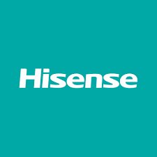
تُعد شركة هايسنس Hisense من الشركات الرائدة والشهيرة في تصنيع الأجهزة المنزلية والحلول التكنولوجية الذكية داخل السوق المصري، حيث نجحت على مدار السنوات في نيل ثقة قطاع عريض من المستخدمين بفضل جودة أجهزتها واعتماد الكثير من العائلات عليها يومياً.
وتتميز أجهزة هايسنس Hisense بتنوعها الشامل مثل الثلاجات النوفروست، الديب فريزر الرأسي والأفقي، الغسالات الاتوماتيك وغسالات الأطباق، بالإضافة إلى أجهزة المطبخ المختلفة. ولذلك فإن الحفاظ على كفاءة هذه الأجهزة يتطلب الاعتماد على مركز متخصص في صيانة هايسنس Hisense Maintenance يمتلك الخبرة الفنية اللازمة للتعامل مع مختلف الأعطال واللوحات البرمجية الإلكترونية.
وفي البداية، يجب التأكيد على أن الصيانة الدورية للأجهزة المنزلية تلعب دوراً أساسياً في الحفاظ على عمر الجهاز الافتراضي وتقليل احتمالية حدوث الأعطال المفاجئة. فالكثير من الأعطال تبدأ بمشكلة بسيطة يمكن تداركها بسهولة إذا تم اكتشافها مبكراً من خلال صيانة هايسنس Hisense.
ولذلك إذا لاحظت أي خلل في أحد الأجهزة بمنزلك فمن الأفضل المبادرة بالتواصل مع رقم صيانة هايسنس الخط الساخن 19580 حيث يقوم فريق خدمة العملاء بتسجيل طلب الصيانة وتوجيه فني متخصص لفحص الجهاز في أسرع وقت ممكن.
وعلاوة على ذلك، توفر مراكز صيانة هايسنس المعتمدة Hisense Service فريقاً من الفنيين المدربين على أعلى مستوى للتعامل مع جميع الأعطال التي قد تصيب أجهزة هايسنس المختلفة. حيث يتم استخدام أحدث أجهزة الفحص والتشخيص لتحديد سبب المشكلة بدقة متناهية، ومن ثم إصلاحها باستخدام قطع غيار أصلية متوافقة تماماً مع مواصفات أجهزة هايسنس Hisense. وهذا ما يضمن عودة الجهاز للعمل بأعلى كفاءة بعد الصيانة.
ومن ناحية أخرى، أصبح من السهل الآن طلب الدعم الفني بسرعة من خلال خدمة واتساب صيانة هايسنس 01289966660 حيث يمكن للعملاء إرسال رسالة مباشرة لشرح المشكلة أو إرسال صورة لقطعة العطل للحصول على تشخيص مبدئي قبل وصول الفني المختص، وتُعد هذه الطريقة من أسرع وسائل التواصل مع مركز صيانة هايسنس للحصول على الدعم الفني الفوري.
وعلاوة على ذلك، يمكن للعملاء في مختلف المحافظات الحصول على الخدمة بكل سهولة من خلال تليفون صيانة هايسنس حيث تعمل فرق الصيانة على تغطية مختلف المناطق لضمان سرعة وصول الدعم الفني، كما يمكن التواصل عبر الخط الساخن 19580 لتسجيل طلبات الصيانة أو الاستفسار عن الخدمات المتاحة.
وبذلك تمثل خدمات صيانة هايسنس Hisense Maintenance الحل الأمثل للحفاظ على كفاءة أجهزتك المنزلية وضمان استمرار عملها بأفضل أداء ممكن، كما توفر وسائل تواصل متعددة مثل رقم صيانة هايسنس الخط الساخن 19580 وتليفون صيانة هايسنس وواتساب صيانة هايسنس 01289966660 التي تساعد على طلب الخدمة بسرعة وأمان على مستوى الجمهورية.
تُعد وستنجهاوس (Westinghouse) من العلامات التجارية البارزة والموثوقة في تقديم أحدث حلول الأجهزة المنزلية الذكية، وتتميز منتجاتها بالاعتماد على التكنولوجيا المتقدمة والتصميمات العصرية التي تلبي احتياجات الأسرة. المنتجات الأكثر مبيعاً تشمل: الثلاجات النوفروست، الغسالات الديجيتال، غسالات الأطباق، والديب فريزر. الخط الساخن الموحد: 19580.
تُعد شركة وستنجهاوس Westinghouse من الشركات الرائدة والشهيرة في تصنيع الأجهزة المنزلية والحلول التكنولوجية الذكية داخل السوق المصري، حيث نجحت على مدار السنوات في نيل ثقة قطاع عريض من المستخدمين بفضل جودة أجهزتها واعتماد الكثير من العائلات عليها يومياً.
وتتميز أجهزة وستنجهاوس Westinghouse بتنوعها الشامل مثل الثلاجات النوفروست، الديب فريزر الرأسي والأفقي، الغسالات الاتوماتيك وغسالات الأطباق، بالإضافة إلى أجهزة المطبخ المختلفة. ولذلك فإن الحفاظ على كفاءة هذه الأجهزة يتطلب الاعتماد على مركز متخصص في صيانة وستنجهاوس Westinghouse Maintenance يمتلك الخبرة الفنية اللازمة للتعامل مع مختلف الأعطال واللوحات البرمجية الإلكترونية.
وفي البداية، يجب التأكيد على أن الصيانة الدورية للأجهزة المنزلية تلعب دوراً أساسياً في الحفاظ على عمر الجهاز الافتراضي وتقليل احتمالية حدوث الأعطال المفاجئة. فالكثير من الأعطال تبدأ بمشكلة بسيطة يمكن تداركها بسهولة إذا تم اكتشافها مبكراً من خلال صيانة وستنجهاوس Westinghouse.
ولذلك إذا لاحظت أي خلل في أحد الأجهزة بمنزلك فمن الأفضل المبادرة بالتواصل مع رقم صيانة وستنجهاوس الخط الساخن 19580 حيث يقوم فريق خدمة العملاء بتسجيل طلب الصيانة وتوجيه فني متخصص لفحص الجهاز في أسرع وقت ممكن.
وعلاوة على ذلك، توفر مراكز صيانة وستنجهاوس المعتمدة Westinghouse Service فريقاً من الفنيين المدربين على أعلى مستوى للتعامل مع جميع الأعطال التي قد تصيب أجهزة وستنجهاوس المختلفة. حيث يتم استخدام أحدث أجهزة الفحص والتشخيص لتحديد سبب المشكلة بدقة متناهية، ومن ثم إصلاحها باستخدام قطع غيار أصلية متوافقة تماماً مع مواصفات أجهزة وستنجهاوس Westinghouse. وهذا ما يضمن عودة الجهاز للعمل بأعلى كفاءة بعد الصيانة.
ومن ناحية أخرى، أصبح من السهل الآن طلب الدعم الفني بسرعة من خلال خدمة واتساب صيانة وستنجهاوس 01289966660 حيث يمكن للعملاء إرسال رسالة مباشرة لشرح المشكلة أو إرسال صورة لقطعة العطل للحصول على تشخيص مبدئي قبل وصول الفني المختص، وتُعد هذه الطريقة من أسرع وسائل التواصل مع مركز صيانة وستنجهاوس للحصول على الدعم الفني الفوري.
وعلاوة على ذلك، يمكن للعملاء في مختلف المحافظات الحصول على الخدمة بكل سهولة من خلال تليفون صيانة وستنجهاوس حيث تعمل فرق الصيانة على تغطية مختلف المناطق لضمان سرعة وصول الدعم الفني، كما يمكن التواصل عبر الخط الساخن 19580 لتسجيل طلبات الصيانة أو الاستفسار عن الخدمات المتاحة.
وبذلك تمثل خدمات صيانة وستنجهاوس Westinghouse Maintenance الحل الأمثل للحفاظ على كفاءة أجهزتك المنزلية وضمان استمرار عملها بأفضل أداء ممكن، كما توفر وسائل تواصل متعددة مثل رقم صيانة وستنجهاوس الخط الساخن 19580 وتليفون صيانة وستنجهاوس وواتساب صيانة وستنجهاوس 01289966660 التي تساعد على طلب الخدمة بسرعة وأمان على مستوى الجمهورية.
تُعد فريجيدير (Frigidaire) من العلامات التجارية البارزة والموثوقة في تقديم أحدث حلول الأجهزة المنزلية الذكية، وتتميز منتجاتها بالاعتماد على التكنولوجيا المتقدمة والتصميمات العصرية التي تلبي احتياجات الأسرة. المنتجات الأكثر مبيعاً تشمل: الثلاجات النوفروست، الغسالات الديجيتال، غسالات الأطباق، والديب فريزر. الخط الساخن الموحد: 19580.
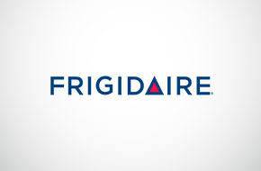
تُعد شركة فريجيدير Frigidaire من الشركات الرائدة والشهيرة في تصنيع الأجهزة المنزلية والحلول التكنولوجية الذكية داخل السوق المصري، حيث نجحت على مدار السنوات في نيل ثقة قطاع عريض من المستخدمين بفضل جودة أجهزتها واعتماد الكثير من العائلات عليها يومياً.
وتتميز أجهزة فريجيدير Frigidaire بتنوعها الشامل مثل الثلاجات النوفروست، الديب فريزر الرأسي والأفقي، الغسالات الاتوماتيك وغسالات الأطباق، بالإضافة إلى أجهزة المطبخ المختلفة. ولذلك فإن الحفاظ على كفاءة هذه الأجهزة يتطلب الاعتماد على مركز متخصص في صيانة فريجيدير Frigidaire Maintenance يمتلك الخبرة الفنية اللازمة للتعامل مع مختلف الأعطال واللوحات البرمجية الإلكترونية.
وفي البداية، يجب التأكيد على أن الصيانة الدورية للأجهزة المنزلية تلعب دوراً أساسياً في الحفاظ على عمر الجهاز الافتراضي وتقليل احتمالية حدوث الأعطال المفاجئة. فالكثير من الأعطال تبدأ بمشكلة بسيطة يمكن تداركها بسهولة إذا تم اكتشافها مبكراً من خلال صيانة فريجيدير Frigidaire.
ولذلك إذا لاحظت أي خلل في أحد الأجهزة بمنزلك فمن الأفضل المبادرة بالتواصل مع رقم صيانة فريجيدير الخط الساخن 19580 حيث يقوم فريق خدمة العملاء بتسجيل طلب الصيانة وتوجيه فني متخصص لفحص الجهاز في أسرع وقت ممكن.
وعلاوة على ذلك، توفر مراكز صيانة فريجيدير المعتمدة Frigidaire Service فريقاً من الفنيين المدربين على أعلى مستوى للتعامل مع جميع الأعطال التي قد تصيب أجهزة فريجيدير المختلفة. حيث يتم استخدام أحدث أجهزة الفحص والتشخيص لتحديد سبب المشكلة بدقة متناهية، ومن ثم إصلاحها باستخدام قطع غيار أصلية متوافقة تماماً مع مواصفات أجهزة فريجيدير Frigidaire. وهذا ما يضمن عودة الجهاز للعمل بأعلى كفاءة بعد الصيانة.
ومن ناحية أخرى، أصبح من السهل الآن طلب الدعم الفني بسرعة من خلال خدمة واتساب صيانة فريجيدير 01289966660 حيث يمكن للعملاء إرسال رسالة مباشرة لشرح المشكلة أو إرسال صورة لقطعة العطل للحصول على تشخيص مبدئي قبل وصول الفني المختص، وتُعد هذه الطريقة من أسرع وسائل التواصل مع مركز صيانة فريجيدير للحصول على الدعم الفني الفوري.
وعلاوة على ذلك، يمكن للعملاء في مختلف المحافظات الحصول على الخدمة بكل سهولة من خلال تليفون صيانة فريجيدير حيث تعمل فرق الصيانة على تغطية مختلف المناطق لضمان سرعة وصول الدعم الفني، كما يمكن التواصل عبر الخط الساخن 19580 لتسجيل طلبات الصيانة أو الاستفسار عن الخدمات المتاحة.
وبذلك تمثل خدمات صيانة فريجيدير Frigidaire Maintenance الحل الأمثل للحفاظ على كفاءة أجهزتك المنزلية وضمان استمرار عملها بأفضل أداء ممكن، كما توفر وسائل تواصل متعددة مثل رقم صيانة فريجيدير الخط الساخن 19580 وتليفون صيانة فريجيدير وواتساب صيانة فريجيدير 01289966660 التي تساعد على طلب الخدمة بسرعة وأمان على مستوى الجمهورية.
تُعد هاير (Haier) من العلامات التجارية البارزة والموثوقة في تقديم أحدث حلول الأجهزة المنزلية الذكية، وتتميز منتجاتها بالاعتماد على التكنولوجيا المتقدمة والتصميمات العصرية التي تلبي احتياجات الأسرة. المنتجات الأكثر مبيعاً تشمل: الثلاجات النوفروست، الغسالات الديجيتال، غسالات الأطباق، والديب فريزر. الخط الساخن الموحد: 19580.
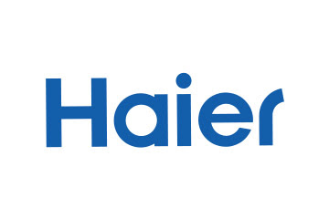
تُعد شركة هاير Haier من الشركات الرائدة والشهيرة في تصنيع الأجهزة المنزلية والحلول التكنولوجية الذكية داخل السوق المصري، حيث نجحت على مدار السنوات في نيل ثقة قطاع عريض من المستخدمين بفضل جودة أجهزتها واعتماد الكثير من العائلات عليها يومياً.
وتتميز أجهزة هاير Haier بتنوعها الشامل مثل الثلاجات النوفروست، الديب فريزر الرأسي والأفقي، الغسالات الاتوماتيك وغسالات الأطباق، بالإضافة إلى أجهزة المطبخ المختلفة. ولذلك فإن الحفاظ على كفاءة هذه الأجهزة يتطلب الاعتماد على مركز متخصص في صيانة هاير Haier Maintenance يمتلك الخبرة الفنية اللازمة للتعامل مع مختلف الأعطال واللوحات البرمجية الإلكترونية.
وفي البداية، يجب التأكيد على أن الصيانة الدورية للأجهزة المنزلية تلعب دوراً أساسياً في الحفاظ على عمر الجهاز الافتراضي وتقليل احتمالية حدوث الأعطال المفاجئة. فالكثير من الأعطال تبدأ بمشكلة بسيطة يمكن تداركها بسهولة إذا تم اكتشافها مبكراً من خلال صيانة هاير Haier.
ولذلك إذا لاحظت أي خلل في أحد الأجهزة بمنزلك فمن الأفضل المبادرة بالتواصل مع رقم صيانة هاير الخط الساخن 19580 حيث يقوم فريق خدمة العملاء بتسجيل طلب الصيانة وتوجيه فني متخصص لفحص الجهاز في أسرع وقت ممكن.
وعلاوة على ذلك، توفر مراكز صيانة هاير المعتمدة Haier Service فريقاً من الفنيين المدربين على أعلى مستوى للتعامل مع جميع الأعطال التي قد تصيب أجهزة هاير المختلفة. حيث يتم استخدام أحدث أجهزة الفحص والتشخيص لتحديد سبب المشكلة بدقة متناهية، ومن ثم إصلاحها باستخدام قطع غيار أصلية متوافقة تماماً مع مواصفات أجهزة هاير Haier. وهذا ما يضمن عودة الجهاز للعمل بأعلى كفاءة بعد الصيانة.
ومن ناحية أخرى، أصبح من السهل الآن طلب الدعم الفني بسرعة من خلال خدمة واتساب صيانة هاير 01289966660 حيث يمكن للعملاء إرسال رسالة مباشرة لشرح المشكلة أو إرسال صورة لقطعة العطل للحصول على تشخيص مبدئي قبل وصول الفني المختص، وتُعد هذه الطريقة من أسرع وسائل التواصل مع مركز صيانة هاير للحصول على الدعم الفني الفوري.
وعلاوة على ذلك، يمكن للعملاء في مختلف المحافظات الحصول على الخدمة بكل سهولة من خلال تليفون صيانة هاير حيث تعمل فرق الصيانة على تغطية مختلف المناطق لضمان سرعة وصول الدعم الفني، كما يمكن التواصل عبر الخط الساخن 19580 لتسجيل طلبات الصيانة أو الاستفسار عن الخدمات المتاحة.
وبذلك تمثل خدمات صيانة هاير Haier Maintenance الحل الأمثل للحفاظ على كفاءة أجهزتك المنزلية وضمان استمرار عملها بأفضل أداء ممكن، كما توفر وسائل تواصل متعددة مثل رقم صيانة هاير الخط الساخن 19580 وتليفون صيانة هاير وواتساب صيانة هاير 01289966660 التي تساعد على طلب الخدمة بسرعة وأمان على مستوى الجمهورية.
تُعد ميديا (Midea) من العلامات التجارية البارزة والموثوقة في تقديم أحدث حلول الأجهزة المنزلية الذكية، وتتميز منتجاتها بالاعتماد على التكنولوجيا المتقدمة والتصميمات العصرية التي تلبي احتياجات الأسرة. المنتجات الأكثر مبيعاً تشمل: الثلاجات النوفروست، الغسالات الديجيتال، غسالات الأطباق، والديب فريزر. الخط الساخن الموحد: 19580.
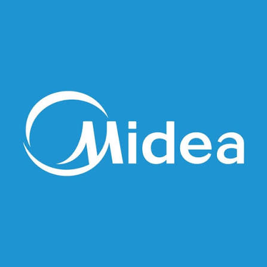
تُعد شركة ميديا Midea من الشركات الرائدة والشهيرة في تصنيع الأجهزة المنزلية والحلول التكنولوجية الذكية داخل السوق المصري، حيث نجحت على مدار السنوات في نيل ثقة قطاع عريض من المستخدمين بفضل جودة أجهزتها واعتماد الكثير من العائلات عليها يومياً.
وتتميز أجهزة ميديا Midea بتنوعها الشامل مثل الثلاجات النوفروست، الديب فريزر الرأسي والأفقي، الغسالات الاتوماتيك وغسالات الأطباق، بالإضافة إلى أجهزة المطبخ المختلفة. ولذلك فإن الحفاظ على كفاءة هذه الأجهزة يتطلب الاعتماد على مركز متخصص في صيانة ميديا Midea Maintenance يمتلك الخبرة الفنية اللازمة للتعامل مع مختلف الأعطال واللوحات البرمجية الإلكترونية.
وفي البداية، يجب التأكيد على أن الصيانة الدورية للأجهزة المنزلية تلعب دوراً أساسياً في الحفاظ على عمر الجهاز الافتراضي وتقليل احتمالية حدوث الأعطال المفاجئة. فالكثير من الأعطال تبدأ بمشكلة بسيطة يمكن تداركها بسهولة إذا تم اكتشافها مبكراً من خلال صيانة ميديا Midea.
ولذلك إذا لاحظت أي خلل في أحد الأجهزة بمنزلك فمن الأفضل المبادرة بالتواصل مع رقم صيانة ميديا الخط الساخن 19580 حيث يقوم فريق خدمة العملاء بتسجيل طلب الصيانة وتوجيه فني متخصص لفحص الجهاز في أسرع وقت ممكن.
وعلاوة على ذلك، توفر مراكز صيانة ميديا المعتمدة Midea Service فريقاً من الفنيين المدربين على أعلى مستوى للتعامل مع جميع الأعطال التي قد تصيب أجهزة ميديا المختلفة. حيث يتم استخدام أحدث أجهزة الفحص والتشخيص لتحديد سبب المشكلة بدقة متناهية، ومن ثم إصلاحها باستخدام قطع غيار أصلية متوافقة تماماً مع مواصفات أجهزة ميديا Midea. وهذا ما يضمن عودة الجهاز للعمل بأعلى كفاءة بعد الصيانة.
ومن ناحية أخرى، أصبح من السهل الآن طلب الدعم الفني بسرعة من خلال خدمة واتساب صيانة ميديا 01289966660 حيث يمكن للعملاء إرسال رسالة مباشرة لشرح المشكلة أو إرسال صورة لقطعة العطل للحصول على تشخيص مبدئي قبل وصول الفني المختص، وتُعد هذه الطريقة من أسرع وسائل التواصل مع مركز صيانة ميديا للحصول على الدعم الفني الفوري.
وعلاوة على ذلك، يمكن للعملاء في مختلف المحافظات الحصول على الخدمة بكل سهولة من خلال تليفون صيانة ميديا حيث تعمل فرق الصيانة على تغطية مختلف المناطق لضمان سرعة وصول الدعم الفني، كما يمكن التواصل عبر الخط الساخن 19580 لتسجيل طلبات الصيانة أو الاستفسار عن الخدمات المتاحة.
وبذلك تمثل خدمات صيانة ميديا Midea Maintenance الحل الأمثل للحفاظ على كفاءة أجهزتك المنزلية وضمان استمرار عملها بأفضل أداء ممكن، كما توفر وسائل تواصل متعددة مثل رقم صيانة ميديا الخط الساخن 19580 وتليفون صيانة ميديا وواتساب صيانة ميديا 01289966660 التي تساعد على طلب الخدمة بسرعة وأمان على مستوى الجمهورية.
تُعد إندست (Indesit) من العلامات التجارية البارزة والموثوقة في تقديم أحدث حلول الأجهزة المنزلية الذكية، وتتميز منتجاتها بالاعتماد على التكنولوجيا المتقدمة والتصميمات العصرية التي تلبي احتياجات الأسرة. المنتجات الأكثر مبيعاً تشمل: الثلاجات النوفروست، الغسالات الديجيتال، غسالات الأطباق، والديب فريزر. الخط الساخن الموحد: 19580.
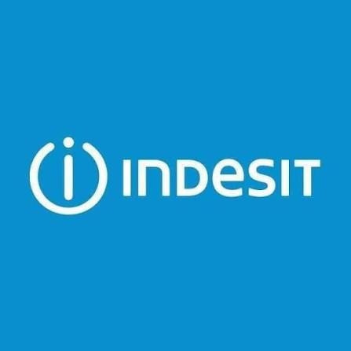
تُعد شركة إندست Indesit من الشركات الرائدة والشهيرة في تصنيع الأجهزة المنزلية والحلول التكنولوجية الذكية داخل السوق المصري، حيث نجحت على مدار السنوات في نيل ثقة قطاع عريض من المستخدمين بفضل جودة أجهزتها واعتماد الكثير من العائلات عليها يومياً.
وتتميز أجهزة إندست Indesit بتنوعها الشامل مثل الثلاجات النوفروست، الديب فريزر الرأسي والأفقي، الغسالات الاتوماتيك وغسالات الأطباق، بالإضافة إلى أجهزة المطبخ المختلفة. ولذلك فإن الحفاظ على كفاءة هذه الأجهزة يتطلب الاعتماد على مركز متخصص في صيانة إندست Indesit Maintenance يمتلك الخبرة الفنية اللازمة للتعامل مع مختلف الأعطال واللوحات البرمجية الإلكترونية.
وفي البداية، يجب التأكيد على أن الصيانة الدورية للأجهزة المنزلية تلعب دوراً أساسياً في الحفاظ على عمر الجهاز الافتراضي وتقليل احتمالية حدوث الأعطال المفاجئة. فالكثير من الأعطال تبدأ بمشكلة بسيطة يمكن تداركها بسهولة إذا تم اكتشافها مبكراً من خلال صيانة إندست Indesit.
ولذلك إذا لاحظت أي خلل في أحد الأجهزة بمنزلك فمن الأفضل المبادرة بالتواصل مع رقم صيانة إندست الخط الساخن 19580 حيث يقوم فريق خدمة العملاء بتسجيل طلب الصيانة وتوجيه فني متخصص لفحص الجهاز في أسرع وقت ممكن.
وعلاوة على ذلك، توفر مراكز صيانة إندست المعتمدة Indesit Service فريقاً من الفنيين المدربين على أعلى مستوى للتعامل مع جميع الأعطال التي قد تصيب أجهزة إندست المختلفة. حيث يتم استخدام أحدث أجهزة الفحص والتشخيص لتحديد سبب المشكلة بدقة متناهية، ومن ثم إصلاحها باستخدام قطع غيار أصلية متوافقة تماماً مع مواصفات أجهزة إندست Indesit. وهذا ما يضمن عودة الجهاز للعمل بأعلى كفاءة بعد الصيانة.
ومن ناحية أخرى، أصبح من السهل الآن طلب الدعم الفني بسرعة من خلال خدمة واتساب صيانة إندست 01289966660 حيث يمكن للعملاء إرسال رسالة مباشرة لشرح المشكلة أو إرسال صورة لقطعة العطل للحصول على تشخيص مبدئي قبل وصول الفني المختص، وتُعد هذه الطريقة من أسرع وسائل التواصل مع مركز صيانة إندست للحصول على الدعم الفني الفوري.
وعلاوة على ذلك، يمكن للعملاء في مختلف المحافظات الحصول على الخدمة بكل سهولة من خلال تليفون صيانة إندست حيث تعمل فرق الصيانة على تغطية مختلف المناطق لضمان سرعة وصول الدعم الفني، كما يمكن التواصل عبر الخط الساخن 19580 لتسجيل طلبات الصيانة أو الاستفسار عن الخدمات المتاحة.
وبذلك تمثل خدمات صيانة إندست Indesit Maintenance الحل الأمثل للحفاظ على كفاءة أجهزتك المنزلية وضمان استمرار عملها بأفضل أداء ممكن، كما توفر وسائل تواصل متعددة مثل رقم صيانة إندست الخط الساخن 19580 وتليفون صيانة إندست وواتساب صيانة إندست 01289966660 التي تساعد على طلب الخدمة بسرعة وأمان على مستوى الجمهورية.
تُعد جولدي (Goldi) من العلامات التجارية البارزة والموثوقة في تقديم أحدث حلول الأجهزة المنزلية الذكية، وتتميز منتجاتها بالاعتماد على التكنولوجيا المتقدمة والتصميمات العصرية التي تلبي احتياجات الأسرة. المنتجات الأكثر مبيعاً تشمل: الثلاجات النوفروست، الغسالات الديجيتال، غسالات الأطباق، والديب فريزر. الخط الساخن الموحد: 19580.
تُعد شركة جولدي Goldi من الشركات الرائدة والشهيرة في تصنيع الأجهزة المنزلية والحلول التكنولوجية الذكية داخل السوق المصري، حيث نجحت على مدار السنوات في نيل ثقة قطاع عريض من المستخدمين بفضل جودة أجهزتها واعتماد الكثير من العائلات عليها يومياً.
وتتميز أجهزة جولدي Goldi بتنوعها الشامل مثل الثلاجات النوفروست، الديب فريزر الرأسي والأفقي، الغسالات الاتوماتيك وغسالات الأطباق، بالإضافة إلى أجهزة المطبخ المختلفة. ولذلك فإن الحفاظ على كفاءة هذه الأجهزة يتطلب الاعتماد على مركز متخصص في صيانة جولدي Goldi Maintenance يمتلك الخبرة الفنية اللازمة للتعامل مع مختلف الأعطال واللوحات البرمجية الإلكترونية.
وفي البداية، يجب التأكيد على أن الصيانة الدورية للأجهزة المنزلية تلعب دوراً أساسياً في الحفاظ على عمر الجهاز الافتراضي وتقليل احتمالية حدوث الأعطال المفاجئة. فالكثير من الأعطال تبدأ بمشكلة بسيطة يمكن تداركها بسهولة إذا تم اكتشافها مبكراً من خلال صيانة جولدي Goldi.
ولذلك إذا لاحظت أي خلل في أحد الأجهزة بمنزلك فمن الأفضل المبادرة بالتواصل مع رقم صيانة جولدي الخط الساخن 19580 حيث يقوم فريق خدمة العملاء بتسجيل طلب الصيانة وتوجيه فني متخصص لفحص الجهاز في أسرع وقت ممكن.
وعلاوة على ذلك، توفر مراكز صيانة جولدي المعتمدة Goldi Service فريقاً من الفنيين المدربين على أعلى مستوى للتعامل مع جميع الأعطال التي قد تصيب أجهزة جولدي المختلفة. حيث يتم استخدام أحدث أجهزة الفحص والتشخيص لتحديد سبب المشكلة بدقة متناهية، ومن ثم إصلاحها باستخدام قطع غيار أصلية متوافقة تماماً مع مواصفات أجهزة جولدي Goldi. وهذا ما يضمن عودة الجهاز للعمل بأعلى كفاءة بعد الصيانة.
ومن ناحية أخرى، أصبح من السهل الآن طلب الدعم الفني بسرعة من خلال خدمة واتساب صيانة جولدي 01289966660 حيث يمكن للعملاء إرسال رسالة مباشرة لشرح المشكلة أو إرسال صورة لقطعة العطل للحصول على تشخيص مبدئي قبل وصول الفني المختص، وتُعد هذه الطريقة من أسرع وسائل التواصل مع مركز صيانة جولدي للحصول على الدعم الفني الفوري.
وعلاوة على ذلك، يمكن للعملاء في مختلف المحافظات الحصول على الخدمة بكل سهولة من خلال تليفون صيانة جولدي حيث تعمل فرق الصيانة على تغطية مختلف المناطق لضمان سرعة وصول الدعم الفني، كما يمكن التواصل عبر الخط الساخن 19580 لتسجيل طلبات الصيانة أو الاستفسار عن الخدمات المتاحة.
وبذلك تمثل خدمات صيانة جولدي Goldi Maintenance الحل الأمثل للحفاظ على كفاءة أجهزتك المنزلية وضمان استمرار عملها بأفضل أداء ممكن، كما توفر وسائل تواصل متعددة مثل رقم صيانة جولدي الخط الساخن 19580 وتليفون صيانة جولدي وواتساب صيانة جولدي 01289966660 التي تساعد على طلب الخدمة بسرعة وأمان على مستوى الجمهورية.
تُعد أريستون (Ariston) من العلامات التجارية البارزة والموثوقة في تقديم أحدث حلول الأجهزة المنزلية الذكية، وتتميز منتجاتها بالاعتماد على التكنولوجيا المتقدمة والتصميمات العصرية التي تلبي احتياجات الأسرة. المنتجات الأكثر مبيعاً تشمل: الثلاجات النوفروست، الغسالات الديجيتال، غسالات الأطباق، والديب فريزر. الخط الساخن الموحد: 19580.
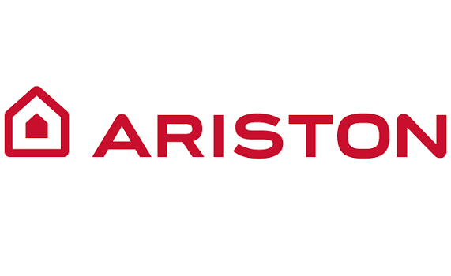
تُعد شركة أريستون Ariston من الشركات الرائدة والشهيرة في تصنيع الأجهزة المنزلية والحلول التكنولوجية الذكية داخل السوق المصري، حيث نجحت على مدار السنوات في نيل ثقة قطاع عريض من المستخدمين بفضل جودة أجهزتها واعتماد الكثير من العائلات عليها يومياً.
وتتميز أجهزة أريستون Ariston بتنوعها الشامل مثل الثلاجات النوفروست، الديب فريزر الرأسي والأفقي، الغسالات الاتوماتيك وغسالات الأطباق، بالإضافة إلى أجهزة المطبخ المختلفة. ولذلك فإن الحفاظ على كفاءة هذه الأجهزة يتطلب الاعتماد على مركز متخصص في صيانة أريستون Ariston Maintenance يمتلك الخبرة الفنية اللازمة للتعامل مع مختلف الأعطال واللوحات البرمجية الإلكترونية.
وفي البداية، يجب التأكيد على أن الصيانة الدورية للأجهزة المنزلية تلعب دوراً أساسياً في الحفاظ على عمر الجهاز الافتراضي وتقليل احتمالية حدوث الأعطال المفاجئة. فالكثير من الأعطال تبدأ بمشكلة بسيطة يمكن تداركها بسهولة إذا تم اكتشافها مبكراً من خلال صيانة أريستون Ariston.
ولذلك إذا لاحظت أي خلل في أحد الأجهزة بمنزلك فمن الأفضل المبادرة بالتواصل مع رقم صيانة أريستون الخط الساخن 19580 حيث يقوم فريق خدمة العملاء بتسجيل طلب الصيانة وتوجيه فني متخصص لفحص الجهاز في أسرع وقت ممكن.
وعلاوة على ذلك، توفر مراكز صيانة أريستون المعتمدة Ariston Service فريقاً من الفنيين المدربين على أعلى مستوى للتعامل مع جميع الأعطال التي قد تصيب أجهزة أريستون المختلفة. حيث يتم استخدام أحدث أجهزة الفحص والتشخيص لتحديد سبب المشكلة بدقة متناهية، ومن ثم إصلاحها باستخدام قطع غيار أصلية متوافقة تماماً مع مواصفات أجهزة أريستون Ariston. وهذا ما يضمن عودة الجهاز للعمل بأعلى كفاءة بعد الصيانة.
ومن ناحية أخرى، أصبح من السهل الآن طلب الدعم الفني بسرعة من خلال خدمة واتساب صيانة أريستون 01289966660 حيث يمكن للعملاء إرسال رسالة مباشرة لشرح المشكلة أو إرسال صورة لقطعة العطل للحصول على تشخيص مبدئي قبل وصول الفني المختص، وتُعد هذه الطريقة من أسرع وسائل التواصل مع مركز صيانة أريستون للحصول على الدعم الفني الفوري.
وعلاوة على ذلك، يمكن للعملاء في مختلف المحافظات الحصول على الخدمة بكل سهولة من خلال تليفون صيانة أريستون حيث تعمل فرق الصيانة على تغطية مختلف المناطق لضمان سرعة وصول الدعم الفني، كما يمكن التواصل عبر الخط الساخن 19580 لتسجيل طلبات الصيانة أو الاستفسار عن الخدمات المتاحة.
وبذلك تمثل خدمات صيانة أريستون Ariston Maintenance الحل الأمثل للحفاظ على كفاءة أجهزتك المنزلية وضمان استمرار عملها بأفضل أداء ممكن، كما توفر وسائل تواصل متعددة مثل رقم صيانة أريستون الخط الساخن 19580 وتليفون صيانة أريستون وواتساب صيانة أريستون 01289966660 التي تساعد على طلب الخدمة بسرعة وأمان على مستوى الجمهورية.
تُعد بوش (Bosch) من العلامات التجارية البارزة والموثوقة في تقديم أحدث حلول الأجهزة المنزلية الذكية، وتتميز منتجاتها بالاعتماد على التكنولوجيا المتقدمة والتصميمات العصرية التي تلبي احتياجات الأسرة. المنتجات الأكثر مبيعاً تشمل: الثلاجات النوفروست، الغسالات الديجيتال، غسالات الأطباق، والديب فريزر. الخط الساخن الموحد: 19580.
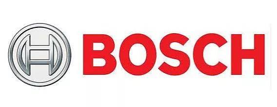
تُعد شركة بوش Bosch من الشركات الرائدة والشهيرة في تصنيع الأجهزة المنزلية والحلول التكنولوجية الذكية داخل السوق المصري، حيث نجحت على مدار السنوات في نيل ثقة قطاع عريض من المستخدمين بفضل جودة أجهزتها واعتماد الكثير من العائلات عليها يومياً.
وتتميز أجهزة بوش Bosch بتنوعها الشامل مثل الثلاجات النوفروست، الديب فريزر الرأسي والأفقي، الغسالات الاتوماتيك وغسالات الأطباق، بالإضافة إلى أجهزة المطبخ المختلفة. ولذلك فإن الحفاظ على كفاءة هذه الأجهزة يتطلب الاعتماد على مركز متخصص في صيانة بوش Bosch Maintenance يمتلك الخبرة الفنية اللازمة للتعامل مع مختلف الأعطال واللوحات البرمجية الإلكترونية.
وفي البداية، يجب التأكيد على أن الصيانة الدورية للأجهزة المنزلية تلعب دوراً أساسياً في الحفاظ على عمر الجهاز الافتراضي وتقليل احتمالية حدوث الأعطال المفاجئة. فالكثير من الأعطال تبدأ بمشكلة بسيطة يمكن تداركها بسهولة إذا تم اكتشافها مبكراً من خلال صيانة بوش Bosch.
ولذلك إذا لاحظت أي خلل في أحد الأجهزة بمنزلك فمن الأفضل المبادرة بالتواصل مع رقم صيانة بوش الخط الساخن 19580 حيث يقوم فريق خدمة العملاء بتسجيل طلب الصيانة وتوجيه فني متخصص لفحص الجهاز في أسرع وقت ممكن.
وعلاوة على ذلك، توفر مراكز صيانة بوش المعتمدة Bosch Service فريقاً من الفنيين المدربين على أعلى مستوى للتعامل مع جميع الأعطال التي قد تصيب أجهزة بوش المختلفة. حيث يتم استخدام أحدث أجهزة الفحص والتشخيص لتحديد سبب المشكلة بدقة متناهية، ومن ثم إصلاحها باستخدام قطع غيار أصلية متوافقة تماماً مع مواصفات أجهزة بوش Bosch. وهذا ما يضمن عودة الجهاز للعمل بأعلى كفاءة بعد الصيانة.
ومن ناحية أخرى، أصبح من السهل الآن طلب الدعم الفني بسرعة من خلال خدمة واتساب صيانة بوش 01289966660 حيث يمكن للعملاء إرسال رسالة مباشرة لشرح المشكلة أو إرسال صورة لقطعة العطل للحصول على تشخيص مبدئي قبل وصول الفني المختص، وتُعد هذه الطريقة من أسرع وسائل التواصل مع مركز صيانة بوش للحصول على الدعم الفني الفوري.
وعلاوة على ذلك، يمكن للعملاء في مختلف المحافظات الحصول على الخدمة بكل سهولة من خلال تليفون صيانة بوش حيث تعمل فرق الصيانة على تغطية مختلف المناطق لضمان سرعة وصول الدعم الفني، كما يمكن التواصل عبر الخط الساخن 19580 لتسجيل طلبات الصيانة أو الاستفسار عن الخدمات المتاحة.
وبذلك تمثل خدمات صيانة بوش Bosch Maintenance الحل الأمثل للحفاظ على كفاءة أجهزتك المنزلية وضمان استمرار عملها بأفضل أداء ممكن، كما توفر وسائل تواصل متعددة مثل رقم صيانة بوش الخط الساخن 19580 وتليفون صيانة بوش وواتساب صيانة بوش 01289966660 التي تساعد على طلب الخدمة بسرعة وأمان على مستوى الجمهورية.
تُعد يونيون اير (Unionaire) من العلامات التجارية البارزة والموثوقة في تقديم أحدث حلول الأجهزة المنزلية الذكية، وتتميز منتجاتها بالاعتماد على التكنولوجيا المتقدمة والتصميمات العصرية التي تلبي احتياجات الأسرة. المنتجات الأكثر مبيعاً تشمل: الثلاجات النوفروست، الغسالات الديجيتال، غسالات الأطباق، والديب فريزر. الخط الساخن الموحد: 19580.
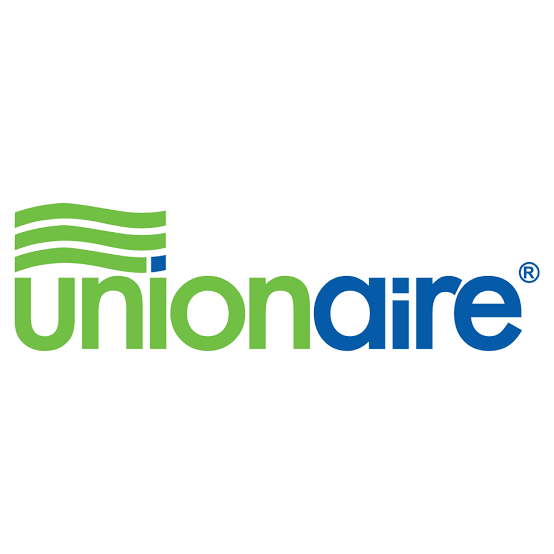
تُعد شركة يونيون اير Unionaire من الشركات الرائدة والشهيرة في تصنيع الأجهزة المنزلية والحلول التكنولوجية الذكية داخل السوق المصري، حيث نجحت على مدار السنوات في نيل ثقة قطاع عريض من المستخدمين بفضل جودة أجهزتها واعتماد الكثير من العائلات عليها يومياً.
وتتميز أجهزة يونيون اير Unionaire بتنوعها الشامل مثل الثلاجات النوفروست، الديب فريزر الرأسي والأفقي، الغسالات الاتوماتيك وغسالات الأطباق، بالإضافة إلى أجهزة المطبخ المختلفة. ولذلك فإن الحفاظ على كفاءة هذه الأجهزة يتطلب الاعتماد على مركز متخصص في صيانة يونيون اير Unionaire Maintenance يمتلك الخبرة الفنية اللازمة للتعامل مع مختلف الأعطال واللوحات البرمجية الإلكترونية.
وفي البداية، يجب التأكيد على أن الصيانة الدورية للأجهزة المنزلية تلعب دوراً أساسياً في الحفاظ على عمر الجهاز الافتراضي وتقليل احتمالية حدوث الأعطال المفاجئة. فالكثير من الأعطال تبدأ بمشكلة بسيطة يمكن تداركها بسهولة إذا تم اكتشافها مبكراً من خلال صيانة يونيون اير Unionaire.
ولذلك إذا لاحظت أي خلل في أحد الأجهزة بمنزلك فمن الأفضل المبادرة بالتواصل مع رقم صيانة يونيون اير الخط الساخن 19580 حيث يقوم فريق خدمة العملاء بتسجيل طلب الصيانة وتوجيه فني متخصص لفحص الجهاز في أسرع وقت ممكن.
وعلاوة على ذلك، توفر مراكز صيانة يونيون اير المعتمدة Unionaire Service فريقاً من الفنيين المدربين على أعلى مستوى للتعامل مع جميع الأعطال التي قد تصيب أجهزة يونيون اير المختلفة. حيث يتم استخدام أحدث أجهزة الفحص والتشخيص لتحديد سبب المشكلة بدقة متناهية، ومن ثم إصلاحها باستخدام قطع غيار أصلية متوافقة تماماً مع مواصفات أجهزة يونيون اير Unionaire. وهذا ما يضمن عودة الجهاز للعمل بأعلى كفاءة بعد الصيانة.
ومن ناحية أخرى، أصبح من السهل الآن طلب الدعم الفني بسرعة من خلال خدمة واتساب صيانة يونيون اير 01289966660 حيث يمكن للعملاء إرسال رسالة مباشرة لشرح المشكلة أو إرسال صورة لقطعة العطل للحصول على تشخيص مبدئي قبل وصول الفني المختص، وتُعد هذه الطريقة من أسرع وسائل التواصل مع مركز صيانة يونيون اير للحصول على الدعم الفني الفوري.
وعلاوة على ذلك، يمكن للعملاء في مختلف المحافظات الحصول على الخدمة بكل سهولة من خلال تليفون صيانة يونيون اير حيث تعمل فرق الصيانة على تغطية مختلف المناطق لضمان سرعة وصول الدعم الفني، كما يمكن التواصل عبر الخط الساخن 19580 لتسجيل طلبات الصيانة أو الاستفسار عن الخدمات المتاحة.
وبذلك تمثل خدمات صيانة يونيون اير Unionaire Maintenance الحل الأمثل للحفاظ على كفاءة أجهزتك المنزلية وضمان استمرار عملها بأفضل أداء ممكن، كما توفر وسائل تواصل متعددة مثل رقم صيانة يونيون اير الخط الساخن 19580 وتليفون صيانة يونيون اير وواتساب صيانة يونيون اير 01289966660 التي تساعد على طلب الخدمة بسرعة وأمان على مستوى الجمهورية.
مهندسونا جاهزون للتحرك فوراً إلى باب منزلك في جميع المحافظات.